La preparazione della KB, regole per l'organizzazione dei dati. Il 26 ha aperto il modello, il 27 l'harness; oggi che cosa l'agente trova quando chiama un tool, e come dev'essere fatto perché gli serva.
DATA, AT COREFRANCESCO GIANFERRARI PINI
SEZIONE 01
La conoscenza
La conoscenza c'è quasi sempre. Il problema è la forma in cui sta.
SEZIONE 1 · DALL'INCONTRO 27
Ieri chi esegue, oggi che cosa sa
Il 26, il modellosa volere, non sa eseguire. Ciò che sa è compresso nei pesi, fermo al cut-off.
Il 27, l'harnessprepara la finestra, esegue i tool, governa il contesto, osserva le tracce.
La domanda lasciata apertaquando l'agente chiama cerca_ordine, o cerca_documenti, che cosa trova dall'altra parte?
Quello che vediamo nei progettiaccanto alle dinamiche organizzative e alle persone, il blocco principale all'adozione dell'AI è sui dati: le aziende sono mediamente indietro nell'organizzarli, e innestare l'AI rende quel gap evidente.
Quasi tutto ciò che l'agente deve sapere non sta nei suoi pesi: sta nei sistemi dell'organizzazione, in forme fatte per lettori diversi.
In che forma sta, e chi ce l'ha messa?
L'agente legge tutto ciò che trova. Oggi: che cosa trova, e come dovrebbe essere strutturato l'insieme dei dati perché gli serva davvero.
01 / Sezione 1 · #slide-1
SEZIONE 1 · DALL'INCONTRO 26
La formula: oggi la KB
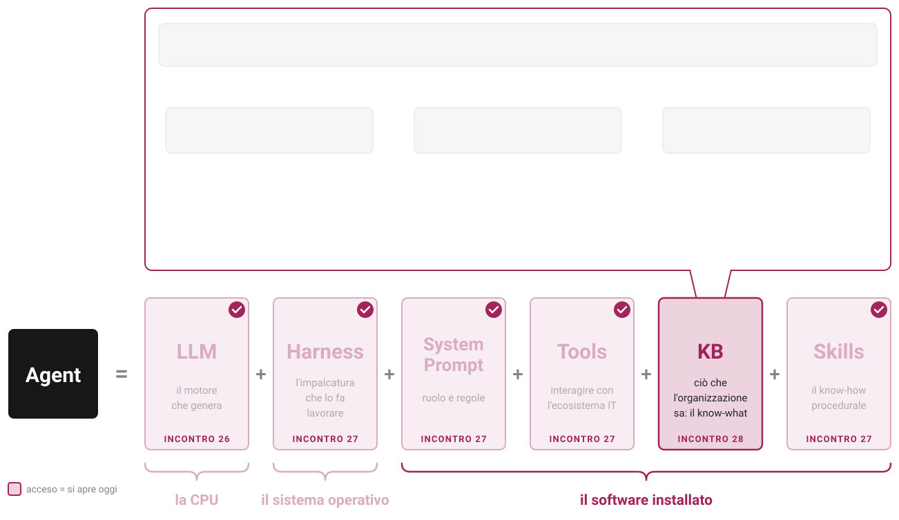
L'LLM è la CPU, l'harness il sistema operativo, il resto il software installato. Del software abbiamo aperto tre programmi su quattro. Il quarto è quello che gli altri tre consultano: senza, cerca_ordine non ha nulla da cercare e la skill rimborsi-acme non ha nulla da verificare.
02 / Sezione 1 · #slide-2
SEZIONE 1 · LA CONOSCENZA
Dalla piramide: dati, informazione, conoscenza, intelligenza
Datinumeri e stringhe senza contesto: 3 5 2 0 4 1 3. Veri, e inutilizzabili.
+ contesto → informazionegli stessi numeri con intestazioni, unità e chiavi: giorni di ritardo, per corriere, per settimana. È la tabella: sezioni 2 e 3.
+ semantica → conoscenzale relazioni esplicite fra i tipi di cose: il corriere consegna la spedizione, il contratto vincola il corriere, il ritardo attiva la penale. È l'ontologia: il grafo che spiega tabelle e documenti. Sezione 7.
+ azioni → intelligenzaqualcuno che usa la conoscenza per agire: l'agente, con i suoi tool e i suoi pattern di accesso. Sezione 6.
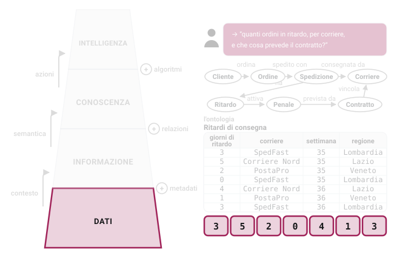
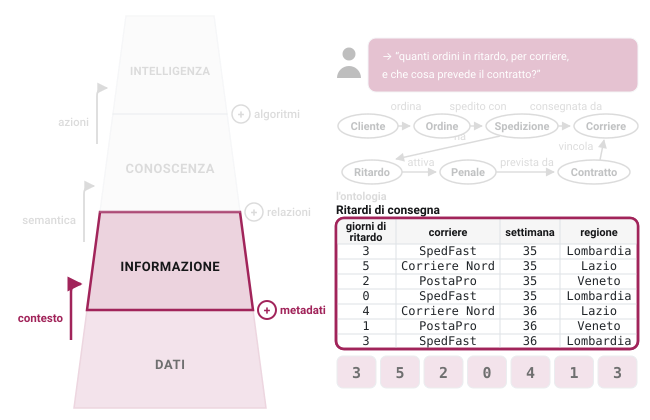
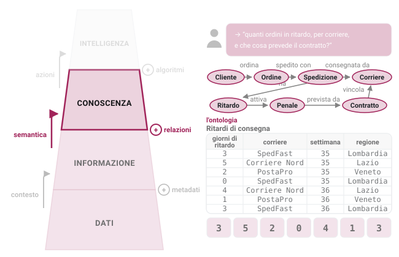
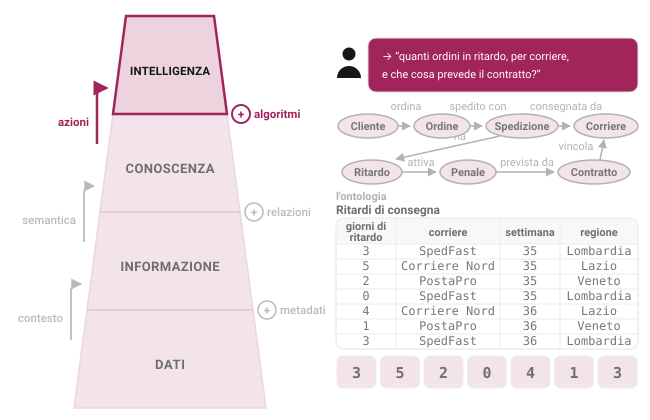
03 / Sezione 1 · #slide-3
SEZIONE 1 · DALL'INCONTRO 27
I quattro requisiti di una conoscenza utile
Quattro modi di dire "di qualità". Il terzo è quello che si intende di solito; gli altri tre non si misurano sul singolo fatto, ma contano altrettanto.
Ricercabile in modo progressivoqualità dell'accesso: si arriva a ciò che serve per passi, dal generale al particolare, senza leggere tutto. L'agente ha una finestra limitata: trova il contratto SpedFast, poi la clausola sui ritardi, poi la penale, non l'archivio intero.
Non ridondantequalità della struttura: un fatto sta in un posto solo. Se il ritardo di una spedizione è calcolato in tre report con tre regole, un agente ne trova tre valori diversi e non sa quale sia vero.
Veritierala qualità del dato in senso stretto: accurata, completa, aggiornata, con un responsabile. Un listino del 2024 senza data è una risposta sbagliata pronta per essere data.
Compoundingqualità nel tempo: ogni aggiunta rende più utile ciò che c'era già, perché si aggancia a ciò che esiste invece di rifarlo. Il contrario: un'altra pipeline, un altro report, un'altra copia.
la pagella · torna alla fine di ogni blocco
ricercabile in modo progressivo
non ridondante
veritiera
compounding
✓ sì · ~ in parte · ✗ no
04 / Sezione 1 · #slide-4
SEZIONE 1 · LA CONOSCENZA
Non è un problema dell'AI
La biblioteca dell'abbaziatutto il sapere del mondo c'è, in una torre. Ma è un labirinto, e la mappa è nella testa del bibliotecario: i libri si trovano solo chiedendo a lui, e lui decide che cosa si può leggere.
Che cosa mancanon i libri. Manca un ordine che chiunque possa percorrere: la conoscenza c'è, ma non è ricercabile, e muore con chi la custodisce.
L'AI l'ha reso evidentefinché a cercare era una persona, si arrangiava: chiedeva al collega, sapeva quale report era quello buono. Un agente non ha il collega: legge ciò che trova, tutto, e con lo stesso peso. Ogni disordine che una persona aggirava diventa una risposta sbagliata.
IMMAGINE DA REPERIRE
La pianta del labirinto della biblioteca, Il nome della rosa, Umberto Eco, Bompiani 1980. Fonte, file e dimensione da concordare prima del download; va in assets/images/uploads/.
La pianta del labirinto, dall'edizione Bompiani del 1980. Ogni stanza porta una lettera; lette in fila, le lettere compongono il nome della regione da cui vengono i libri (HIBERNIA, YSPANIA, LEONES…): dentro il labirinto c'è già l'abbozzo di un'organizzazione, per provenienza. Non basta, ma è un inizio.
05 / Sezione 1 · #slide-5
SEZIONE 1 · DALL'INCONTRO 27
Know-what e know-how
KB
Know-what: la KBciò che l'organizzazione sa: quanti ordini, quali clienti, che cosa dice il contratto con SpedFast. Sta in tabelle, documenti, grafi; l'agente lo raggiunge con i tool. È ricercabile: la domanda è in che forma.
Skills
Know-how: le skillciò che l'organizzazione sa fare: come si gestisce un rimborso, come si scrive il report della settimana. Sta in procedure scritte da chi il lavoro lo sa fare; l'agente lo carica a richiesta (il 27: rimborsi-acme). È eseguibile: la domanda è chi lo scrive.
La skill del 27 chiamava cerca_ordine e crea_rimborso: il know-how usa il know-what. Senza il primo, il secondo non ha su che cosa lavorare.
Oggi: sezioni 2–6 sul know-what, la 7 sul know-how e su ciò che li lega.
06 / Sezione 1 · #slide-6
SEZIONE 1 · LA CONOSCENZA
Lo spettro: dal dato strutturato al non strutturato
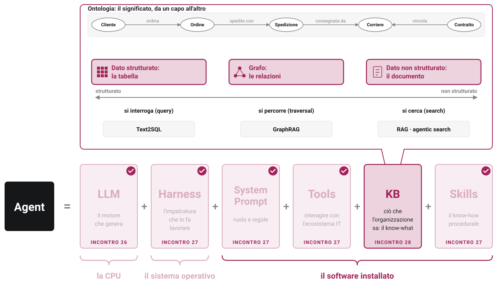
A un capo il dato strutturato: la struttura è decisa prima di scrivere, il fatto sta in una cella, si interroga. All'altro il non strutturato: la struttura non c'è, il fatto va estratto dal testo, si cerca. In mezzo il grafo: la struttura si evolve nel tempo, un tipo di nodo alla volta, ma ciò che c'è si percorre in modo rigoroso, come una tabella. Sopra tutto l'ontologia: non tiene i dati, ne spiega il significato.
07 / Sezione 1 · #slide-7
SEZIONE 02
Il dato strutturato, 1/2: dove nasce
Il transazionale è fatto per scrivere bene, non per rispondere a domande. Sta dietro i tool; davanti all'agente serve un'altra forma dello stesso dato.
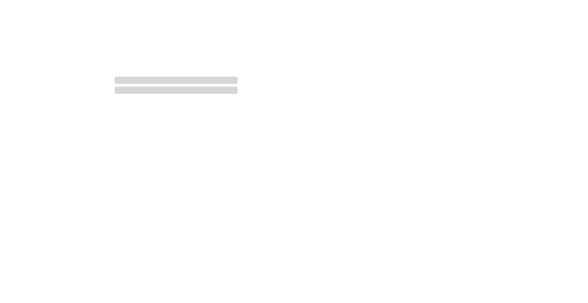
sei qui · la tabella
SEZIONE 2 · IL DATO STRUTTURATO, 1/2: DOVE NASCE
Forma e fine: due assi
La forma
relazionale: tabelle con colonne fisse, lo schema deciso prima, le relazioni per chiave.
document: un record è un documento JSON, con i campi che servono a lui, annidati; lo schema lo decide chi scrive.
Il fine
transazionale: registrare ciò che succede, una riga alla volta, in fretta e senza perdere nulla.
analitico: rispondere a domande su ciò che è successo, leggendo milioni di righe insieme.
Da dove entra l'agente
analitico: diretto, in SQL: la forma è fatta per chi fa domande.
transazionale: mediato, da un tool o un'API; la slide 11 dice perché.
document: se la struttura è semplice, anche diretto; eventi e log li legge nel sandbox, con bash.
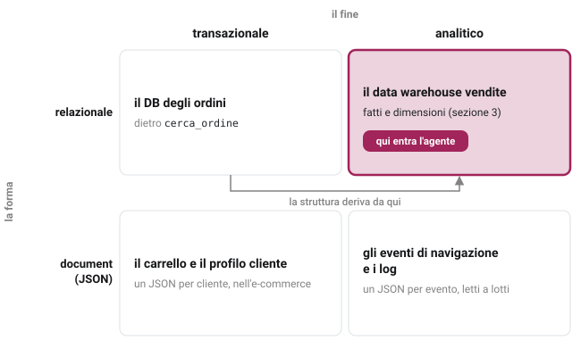
Il relazionale è la forma che non si può non conoscere: anche chi sceglie il documento, o il grafo, ragiona per differenza da lì.
08 / Sezione 2 · #slide-8
SEZIONE 2 · IL DATO STRUTTURATO, 1/2: DOVE NASCE
Il modello relazionale: tabelle, tipi, chiavi
Colonne e tipilo schema è deciso prima: ogni colonna ha un nome e un tipo. 3 in una colonna giorni_ritardo INT è un numero su cui si può sommare e confrontare; "3 giorni circa" in una cella di testo no. Il tipo è il primo pezzo di contesto.
La chiave primariauna colonna che identifica la riga una volta sola: 4471 è un ordine e uno solo. È ciò che rende un fatto ritrovabile.
La chiave esternauna colonna che contiene la chiave di un'altra tabella: la spedizione porta l'id_ordine, l'ordine porta l'id_cliente. Le relazioni non sono disegnate: sono valori che si rimandano.
CREATE TABLE ordini (
id_ordine INT PRIMARY KEY, -- un numero, unico: la chiave
id_cliente INT REFERENCES clienti, -- rimanda a un cliente
data_ordine DATE, -- una data, non un testo
importo DECIMAL(10,2) -- euro, con due decimali
);
CREATE TABLE spedizioni (
id_spedizione INT PRIMARY KEY,
id_ordine INT REFERENCES ordini, -- rimanda a un ordine
corriere VARCHAR(40),
data_prevista DATE,
data_consegna DATE
);
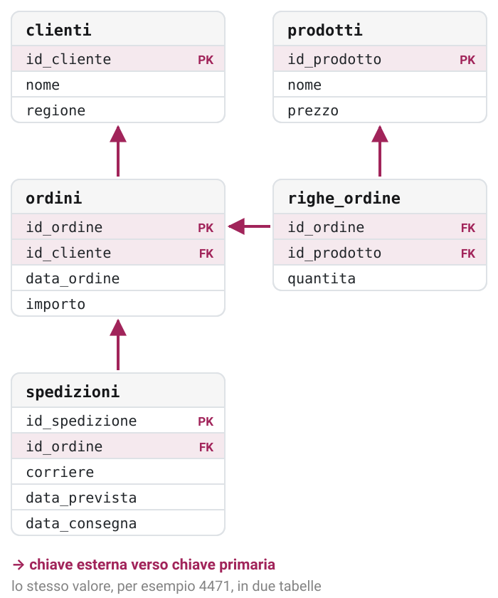
Quattro tabelle così (clienti, ordini, spedizioni, prodotti) sono ciò che sta dietro cerca_ordine. Il ritardo non è una colonna: è data_consegna − data_prevista, calcolato quando serve. Segnatevelo: torna nella sezione 3.
09 / Sezione 2 · #slide-9
SEZIONE 2 · IL DATO STRUTTURATO, 1/2: DOVE NASCE
Il SQL: quattro verbi
SELECT: che cosa vogliodati (colonne così come sono: il corriere) e metriche (numeri calcolati su più righe: quante spedizioni, quanti giorni di ritardo in media).
FROM … JOIN: da dove, e con che cosala tabella di partenza e quelle da unire, agganciate per chiave: la spedizione con il suo ordine. È la chiave esterna della slide 9, usata.
WHERE: quali righe tengoil filtro, riga per riga: solo agosto, solo le consegne arrivate dopo la data prevista.
GROUP BY: come le raggruppouna riga di risultato per ogni valore: un totale per corriere. È ciò che trasforma righe in metriche.
SELECT s.corriere,
COUNT(*) AS ordini_in_ritardo,
AVG(s.data_consegna
- s.data_prevista) AS ritardo_medio_ggFROM spedizioni s
JOIN ordini o ON o.id_ordine = s.id_ordineWHERE o.data_ordine BETWEEN '2026-08-01'
AND '2026-08-31'
AND s.data_consegna > s.data_previstaGROUP BY s.corriere;SpedFast · 121 · 3,8
Corriere Nord · 44 · 1,9
PostaPro · 22 · 1,2
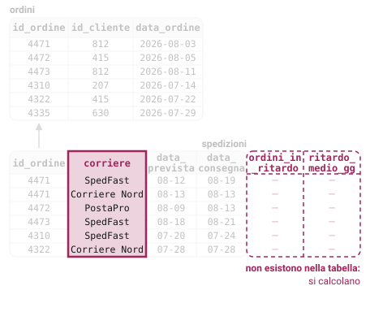
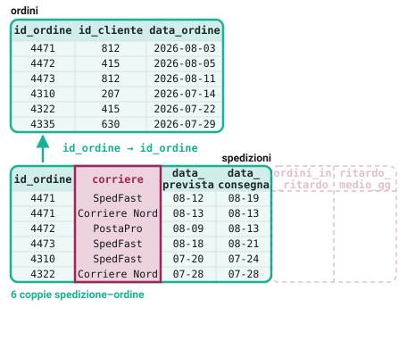
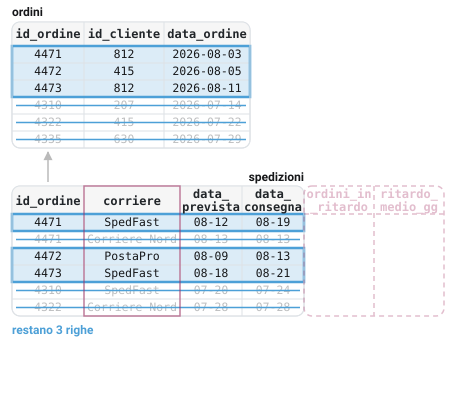
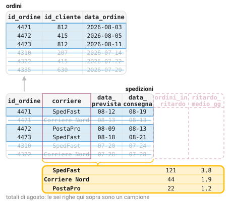
È la domanda della slide 20 del 27, quella che il modello aveva risolto con quattro righe di Python su un export. Qui è una query: la stessa domanda, fatta al dato dove sta. Nella sezione 6 la scriverà il modello.
10 / Sezione 2 · #slide-10
SEZIONE 2 · IL DATO STRUTTURATO, 1/2: DOVE NASCE
Il DB transazionale: per chi è fatto
Performance operativa
migliaia di scritture piccole al secondo: un ordine, una spedizione, un cambio di stato. Ogni scrittura deve toccare poche righe, con un lucchetto brevissimo, e non perdere mai un fatto. La lettura tipica è per chiave: "l'ordine 4471", non "tutti gli ordini di agosto": è il caso classico in cui la risposta sta solo qui, perché lo stato di adesso lo tiene lui. L'agente però non ci va diretto: quella lettura gliela fa un tool, o un'API.
Semplicità del coding
l'applicazione che scrive deve poter cambiare un fatto in un posto solo: l'indirizzo del cliente sta in clienti, e basta. Ogni copia in più è un bug in attesa. È la ragione della normalizzazione, prossima slide.
Perché non è opportuno che sia accessibile all'agente
Le regole vivono nell'applicazione, non nel databasevalidazioni, vincoli fra tabelle, autorizzazioni, transazioni: è il codice dell'applicazione a garantirle, e con esse la sicurezza: chi può vedere e toccare che cosa lo decide l'applicazione, quindi il tool. Un UPDATE scritto dal modello le salta tutte, e un UPDATE senza WHERE è un danno reale sul sistema che tiene i conti. Il tool (cerca_ordine, crea_rimborso) passa dall'applicazione, quindi dalle regole.
È dimensionato per scritture piccole, non per letture grandiuna query analitica lanciata dal modello (una scansione di milioni di righe, una join a cinque tabelle) rallenta le operazioni di tutti. L'API espone accessi puntuali, per chiave, indicizzati: un ordine alla volta.
Difficile da leggere per il modellocentinaia di tabelle normalizzate con nomi tecnici (ord_hdr, ord_ln, cust_addr_hist): per una domanda semplice servono sei join che nessuna descrizione spiega. Il tool è il contratto scritto per il modello (il 27, slide 18); l'analitico, come vedremo, è già scritto per chi fa domande.
l'unica porta · dal 27
name:cerca_ordinedescription: Restituisce lo stato di un ordine dato il suo
identificativo. Usalo quando il cliente chiede
dove si trova un ordine o quando arriva.
input_schema:
id_ordine: string — l'identificativo, es. "4471"
Vale anche per la sicurezza: dare a un agente il SQL diretto sul sistema di record è uno dei tre lati della trifecta del 27, un canale per fare danni, aperto senza motivo.
11 / Sezione 2 · #slide-11
SEZIONE 2 · IL DATO STRUTTURATO, 1/2: DOVE NASCE
La normalizzazione
Il problemase in ogni riga d'ordine scrivo nome e indirizzo del cliente, il cliente Rossi sta in duecento righe. Cambia indirizzo: duecento aggiornamenti, e basta che uno manchi per avere due indirizzi veri. È l'anomalia di aggiornamento.
La regolaun fatto, una riga: il cliente sta in clienti una volta sola, l'ordine porta solo id_cliente. Le forme normali sono i gradi di questa regola; per noi basta la sostanza: niente ripetizioni, tutto per chiave.
Il prezzo, dichiaratoè un'ottimizzazione per chi scrive, pagata da chi legge. Per "gli ordini di Rossi con il corriere" servono tre tabelle e due join, e per sapere quali serve conoscere lo schema. Per il lavoro analitico, e per un agente, il transazionale normalizzato è il posto meno accessibile e meno chiaro in cui il dato possa stare.
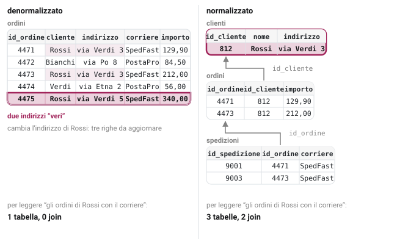
"Non ridondante" (slide 4) qui è una regola di progetto che il database fa rispettare con le chiavi. L'analitico rinuncerà in parte a questa regola, di proposito, per riprendersi accessibilità e chiarezza: è la sezione 3.
12 / Sezione 2 · #slide-12
SEZIONE 2 · IL DATO STRUTTURATO, 1/2: DOVE NASCE
La pagella del transazionale, e la cerniera
✗
ricercabile in modo progressivo
trovare per chiave non è cercare: l'ordine 4471 si trova in un istante, ma solo se se ne sa già il numero. Non c'è un livello generale da cui scendere, e lo schema è pieno di ambiguità rischiose: nomi che si somigliano, join che sembrano giuste e non lo sono. Anche in sola lettura, l'accesso va mediato dai tool.
✓
non ridondante
per costruzione: la normalizzazione, e le chiavi che la fanno rispettare.
✓
veritiera
è il sistema di record: i fatti nascono qui, in tempo reale, e l'applicazione ne risponde. Con un'avvertenza: nei dati più vecchi restano errori mai sanati, e non tutto è storicizzato (l'indirizzo di ieri è sparito). Molto spesso questa pulizia si fa nel data warehouse, non qui.
✗
compounding
ogni applicazione ha il suo: gli ordini in un sistema, i reclami in un altro, i contratti in un terzo. I fatti non si agganciano fra loro, e la conoscenza non si accumula: si moltiplicano i silos.
Voti dati dal punto di vista di chi fa domande: una persona, o un agente.
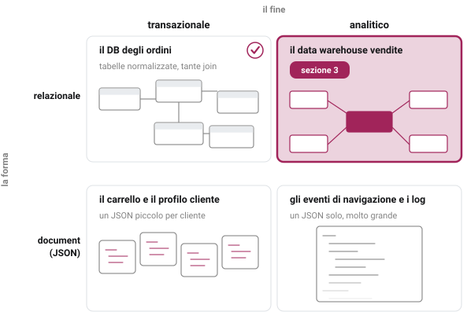
Il transazionale è dove il dato nasce, ed è dietro i tool: cerca_ordine lo interroga per chiave, dall'applicazione. La granularità con cui scrive è la granularità di tutto ciò che verrà dopo: nessuna trasformazione a valle inventa un dettaglio che a monte non c'è. Davanti all'agente, che fa domande, serve un'altra forma dello stesso dato. Sezione 3.
13 / Sezione 2 · #slide-13
SEZIONE 03
Il dato strutturato, 2/2: dove si interroga
L'analitico è il dato riscritto per chi fa domande. È il posto dove entra l'agente.
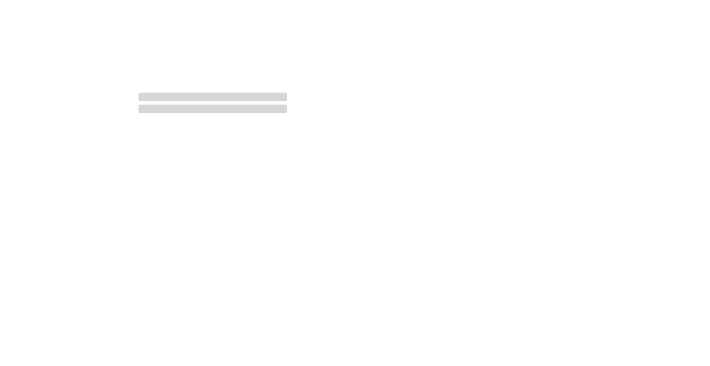
sei qui · la tabella, da vicino
SEZIONE 3 · IL DATO STRUTTURATO, 2/2: DOVE SI INTERROGA
Da Excel al data warehouse
Perché piaceuna tabella sola, una riga per spedizione, con dentro cliente, corriere, importo, ritardo. Niente join, niente schema da conoscere: si filtra, si fa una pivot, si legge. È la forma in cui una persona vuole il dato.
Perché non reggeogni analista se ne fa una copia, e le copie divergono: tre "ritardo medio" diversi nella stessa riunione, nessuno sa quale sia vero. E a un milione di righe il foglio si ferma. Il foglio fallisce su "non ridondante" e su "veritiera".
Il data warehousela stessa tabella larga, tenuta una volta sola, in un database, alimentata dal transazionale e con un responsabile. Kimball ne ha scritto la forma trent'anni fa: una tabella dei fatti e le sue dimensioni. Sembra il foglio; regge un milione di righe e non diverge.
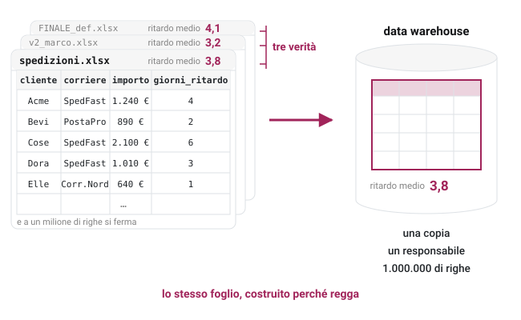
L'analitico non è "un altro database": è il transazionale riscritto per chi fa domande. Ed è dove entra l'agente, che fa domande.
14 / Sezione 3 · #slide-14
SEZIONE 3 · IL DATO STRUTTURATO, 2/2: DOVE SI INTERROGA
Data warehouse: dove e come nasce
Una derivazionenegli anni Novanta i database relazionali erano il solo motore serio, e servivano a scrivere transazioni. Il data warehouse è nato come un modo di usarli al contrario: pochi scriventi, molti lettori, letture su milioni di righe. Stesse tabelle, stesso SQL, un altro mestiere.
Alimentato da ETLogni notte (o ogni ora) un processo estrae dai sistemi di record (ordini, CRM, reclami), trasforma (pulisce, ricompone le join, calcola il ritardo, allinea i nomi) e carica nel data warehouse. Il dato non nasce qui: arriva qui, in un'altra forma. Chi scrive l'ETL decide quella forma.
E i motori si sono adattatii database analitici moderni tengono i dati per colonna: sommare gli importi di un milione di righe legge una colonna sola. Da qui gli strumenti della slide 25, che parlano tutti lo stesso SQL.
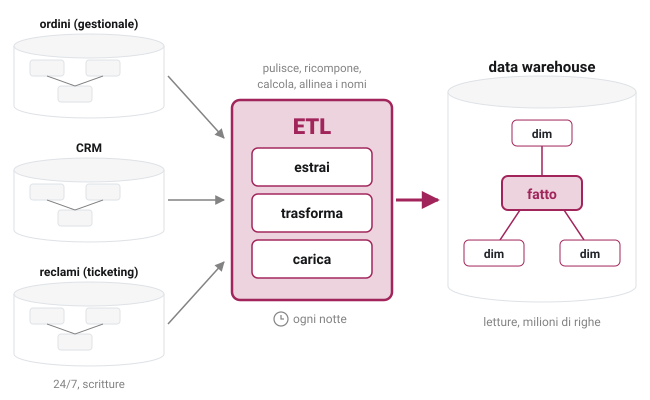
Per l'agente conta una cosa: la lingua è la stessa del transazionale, il SQL della slide 10. Cambia il dato che trova dall'altra parte, e quanto è leggibile.
15 / Sezione 3 · #slide-15
SEZIONE 3 · IL DATO STRUTTURATO, 2/2: DOVE SI INTERROGA
Fatti e dimensioni: lo star schema
Il fattouna riga per evento: una spedizione. Porta le misure (importo, giorni di ritardo) e le chiavi verso le dimensioni. È lunga (milioni di righe) e stretta.
Le dimensioniuna riga per cosa: un corriere, un cliente, un giorno. Portano gli attributi con cui si filtra e si raggruppa: il nome del corriere, la regione del cliente, il mese. Sono corte e larghe.
La stellaogni dimensione si aggancia al fatto con una join sola, sempre uguale. Non serve conoscere lo schema: si parte dal fatto e si esce verso la dimensione che serve. È leggibile da una persona, e da un modello.
CREATE TABLE dim_corriere (
id_corriere INT PRIMARY KEY,
nome VARCHAR(40), -- SpedFast
tipo VARCHAR(20), -- espresso / standard
contratto_dal DATE
);
CREATE TABLE fatto_spedizioni (
id_spedizione INT PRIMARY KEY,
id_corriere INT REFERENCES dim_corriere, -- una join, sempre questa
id_cliente INT REFERENCES dim_cliente,
id_data INT REFERENCES dim_data,
importo DECIMAL(10,2), -- misura
giorni_ritardo INT, -- misura, già calcolata
giorni_lavorativi_ritardo INT -- stessa cosa, festivi esclusi (torna nella sez. 6)
);
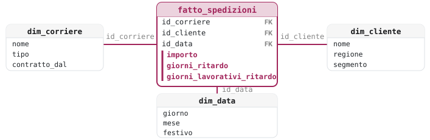
Nel transazionale il ritardo era data_consegna − data_prevista, da calcolare ogni volta e da sapere. Qui è una colonna: qualcuno l'ha calcolata una volta, per tutti, con una regola sola.
16 / Sezione 3 · #slide-16
SEZIONE 3 · IL DATO STRUTTURATO, 2/2: DOVE SI INTERROGA
La denormalizzazione, di proposito
La dimensione ripetenel transazionale il corriere, il suo tipo di contratto e la sua sede stavano in tre tabelle. In dim_corriere stanno in una riga: chi legge trova tutto con una join. Se l'ETL sbaglia, sbaglia in un posto solo: la ridondanza è controllata, non accidentale.
La dimensione storicizzanel transazionale il nuovo indirizzo sovrascrive il vecchio (slide 13: "non tutto è storicizzato"). Qui, quando il cliente cambia regione, la dimensione aggiunge una riga con le date di validità, e le spedizioni di ieri restano agganciate alla regione di ieri. Il passato non si riscrive.
Il prezzo, dichiarato anche quipiù spazio, e un ETL che deve sapere che cosa ripetere e quando aprire una riga nuova. È il lavoro del data management, slide 21. Si paga una volta, lo incassano tutti i lettori.
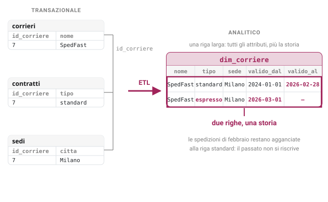
Slide 12 e 17 sono la stessa scelta vista dai due lati: normalizzare ottimizza chi scrive, denormalizzare ottimizza chi legge. Il dato è lo stesso; cambia per chi è tenuto.
17 / Sezione 3 · #slide-17
SEZIONE 3 · IL DATO STRUTTURATO, 2/2: DOVE SI INTERROGA
La granularità e le metriche
La granularitàdice che cosa rappresenta una riga: "una riga è una spedizione". Va decisa prima, perché stabilisce a quali domande la tabella può rispondere: una riga per spedizione basta per i ritardi per corriere; per i colli in ritardo serve una riga per collo; con una riga per ordine non si risponde né all'una né all'altra, perché un ordine può avere due spedizioni.
Le metriche additivel'importo si somma su qualsiasi dimensione: per corriere, per mese, per regione. I giorni di ritardo si sommano, ma la media va ricalcolata dai totali, non mediando le medie. Il numero di clienti distinti non si somma affatto. La granularità dice quali somme sono legittime.
La granularità viene da monteè la cerniera della slide 13: se il gestionale registra le spedizioni e non i colli, il fatto è la spedizione. Nessun ETL inventa un dettaglio che il sistema di record non ha scritto. Chi vuole una granularità più fine deve cambiare il transazionale, non il data warehouse.
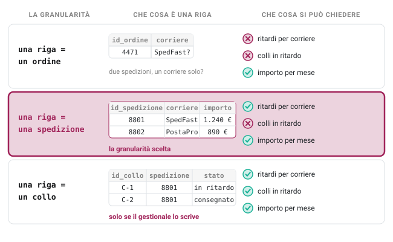
Per l'agente la granularità è la prima cosa da sapere e l'ultima che gli viene detta: "una riga è una spedizione" vale più di cento descrizioni di colonne. Torna nella sezione 6 e nella 7.
18 / Sezione 3 · #slide-18
SEZIONE 3 · IL DATO STRUTTURATO, 2/2: DOVE SI INTERROGA
Join e fanout
La domanda"per corriere: importo spedito e numero di reclami". Due fatti, fatto_spedizioni e fatto_reclami, con grani diversi: una riga per spedizione, una riga per reclamo.
Il fanoutse li unisco per corriere prima di aggregare, ogni spedizione si accoppia con ogni reclamo dello stesso corriere: 121 spedizioni × 9 reclami = 1.089 righe, e l'importo di SpedFast esce nove volte più grande. Nessun errore, nessun avviso: un numero sbagliato con l'aria di un numero giusto.
La forma giustaaggrega ciascun fatto alla granularità della domanda (per corriere), e unisci i due totali: una subquery per fatto, poi una join fra risultati di una riga per corriere. È la regola: mai una join fra fatti, sempre fra aggregati.
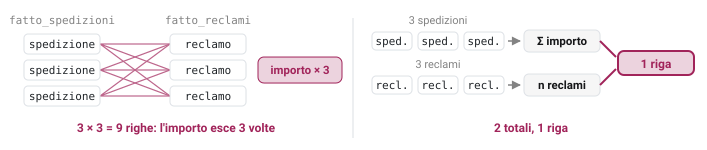
-- ✗ fanout: join prima di aggregareSELECT c.nome, SUM(s.importo), COUNT(r.id_reclamo)
FROM fatto_spedizioni s
JOIN fatto_reclami r ON r.id_corriere = s.id_corriere
JOIN dim_corriere c ON c.id_corriere = s.id_corriere
GROUP BY c.nome; -- SpedFast: 1.658.700 € (×9)
-- ✓ una subquery per fatto, join fra totaliSELECT c.nome, sp.importo, rc.reclami
FROM (SELECT id_corriere, SUM(importo) AS importo
FROM fatto_spedizioni GROUP BY id_corriere) sp
JOIN (SELECT id_corriere, COUNT(*) AS reclami
FROM fatto_reclami GROUP BY id_corriere) rc USING (id_corriere)
JOIN dim_corriere c USING (id_corriere); -- SpedFast: 184.300 € · 9
È l'errore più frequente di chi scrive SQL, persone e modelli: torna nella sezione 6 come primo modo in cui Text2SQL sbaglia con l'aria di aver ragione. Il semantic linking, che dichiara la granularità di ogni tabella a partire dalla classe, lo impedisce alla radice: sezione 7, slide 56.
19 / Sezione 3 · #slide-19
SEZIONE 3 · IL DATO STRUTTURATO, 2/2: DOVE SI INTERROGA
Sicurezza: tabella, colonna, riga
Tabellachi può leggere fatto_spedizioni e chi no. È il permesso più grossolano: o tutto o niente.
Colonnachi vede importo e chi no; chi vede il nome del cliente e chi solo il suo id. Le colonne sensibili si mascherano, non si tolgono: la query gira, il valore no.
Rigail responsabile di zona vede solo le spedizioni della sua regione: la stessa tabella, filtrata per chi la legge. Il filtro lo applica il database, non la query.
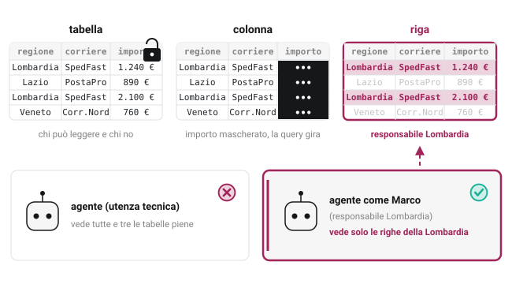
Con quale identità interroga l'agente?Con un'utenza tecnica sua: semplice, e pericoloso: risponde al magazziniere con i margini che vede il direttore. Con l'identità dell'utente che gli parla: il data warehouse applica le tre regole a lui, e l'agente non può mostrare ciò che l'utente non potrebbe vedere. È la seconda scelta quella giusta, e va fatta nell'harness, dove sta il tool.
Nel transazionale la sicurezza sta nell'applicazione, quindi nel tool (slide 11): è per questo che l'agente ci entra solo da lì. Nell'analitico sta nel database, a questi tre livelli: è per questo che un agente può interrogarlo direttamente, purché lo faccia con l'identità di chi gli parla. Il tool resta codice dell'harness (il 27), ed è lì che si decide con quali credenziali chiama.
20 / Sezione 3 · #slide-20
SEZIONE 3 · IL DATO STRUTTURATO, 2/2: DOVE SI INTERROGA
Il data management come trasformazione di forma
Che cosa faprende il dato dove nasce e lo riscrive nella forma di chi lo legge: dal transazionale allo star, dallo star alle tabelle larghe di un report, da un documento a un fatto (sezione 4). E lo arricchisce: calcola ciò che a monte non c'è come colonna (i giorni di ritardo, il margine), integra fonti che non si parlano (il corriere del gestionale e quello del ticketing sono lo stesso SpedFast), aggiunge la storia (slide 17). Non registra fatti nuovi: ne cambia la forma e ne aumenta il valore.
Le pipelineogni trasformazione è codice che gira a orari, dipende da ciò che c'è a monte e alimenta ciò che c'è a valle. Ha un proprietario, dei test, una storia di guasti. È software, e va trattato come software.
Le dipendenzefatto_spedizioni dipende da spedizioni e da ordini; il report dei ritardi dipende da fatto_spedizioni. Se cambia una colonna a monte, si rompe qualcosa a valle. Sapere che cosa dipende da che cosa (il lineage) è metà del mestiere.
Chi ha fatto la trasformazione sa che cosa vuol dire "giorni di ritardo": festivi esclusi? dalla data prevista o da quella promessa? Quel sapere è la semantica della piramide, e di solito sta solo nel codice della pipeline. Sezione 7.
21 / Sezione 3 · #slide-21
SEZIONE 3 · IL DATO STRUTTURATO, 2/2: DOVE SI INTERROGA
L'antipattern: una pipeline per report
Come nascearriva la richiesta "voglio il report dei ritardi per regione". Il modo più veloce è una pipeline nuova: dal transazionale, con le sue join, il suo calcolo del ritardo, la sua tabella finale. Funziona in una settimana. La richiesta dopo fa lo stesso.
Che cosa producedieci report, dieci pipeline, dieci definizioni di ritardo (festivi sì, festivi no, dalla data promessa, da quella prevista). Tre "ritardo medio" nella stessa riunione: il foglio Excel della slide 14, rifatto in grande e con più fatica.
Che cosa si perdeil compounding. Ogni pipeline parte da zero invece di agganciarsi al fatto che esiste; il lavoro dell'undicesima non rende migliori le dieci prima. E per un agente è peggio: dieci tabelle con lo stesso nome e numeri diversi, nessun modo di sapere quale sia quella buona.
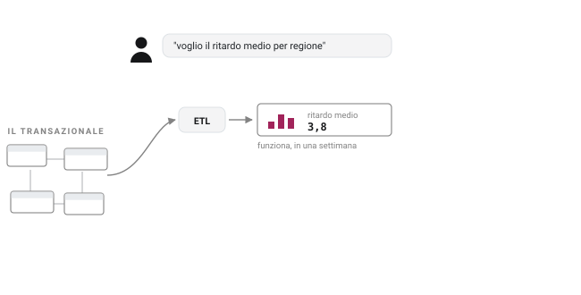
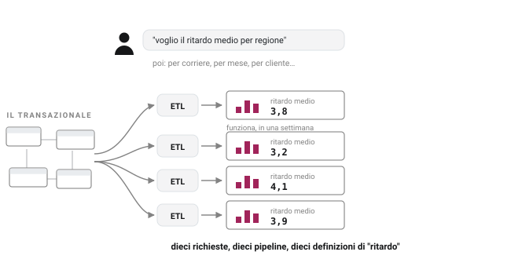
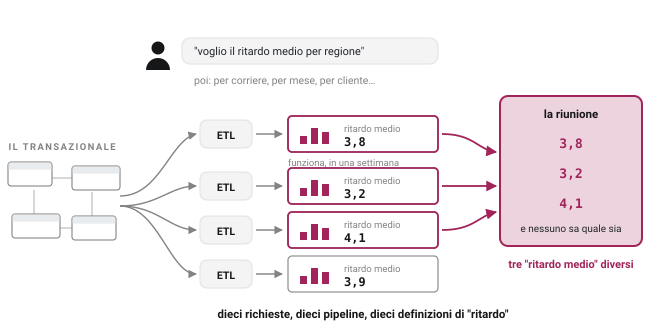
Il pattern giusto è la stella: un fatto, calcolato una volta con una regola sola, e dieci report che lo leggono. La pipeline in più si scrive solo quando manca un fatto, non quando manca un report.
22 / Sezione 3 · #slide-22
SEZIONE 3 · IL DATO STRUTTURATO, 2/2: DOVE SI INTERROGA
Pregi di Kimball
Leggibile senza lo schemaun fatto al centro, le dimensioni intorno, una join per dimensione, sempre uguale. Chi arriva capisce dove sono le cose in un'ora; un modello lo capisce dalla lista delle tabelle. Gli errori restano possibili, sulla granularità prima di tutto (slide 18 e 19), ma sono molti meno che sui modelli transazionali tipici, e sono sempre gli stessi: si possono prevenire.
Nomi di businessdim_corriere.nome, fatto_spedizioni.giorni_ritardo: le colonne si chiamano come le cose di cui si parla in riunione, non ord_hdr.dlv_dt. La traduzione l'ha fatta l'ETL, una volta.
Dimensioni conformila stessa dim_corriere serve al fatto delle spedizioni e a quello dei reclami. Quando arriva un terzo fatto (le fatture dei corrieri) si aggancia alla dimensione che c'è già: è il compounding, reso struttura.
Metriche definite una volta"giorni di ritardo" ha una regola, scritta nell'ETL, uguale per tutti i report. La riunione con tre ritardi medi finisce.
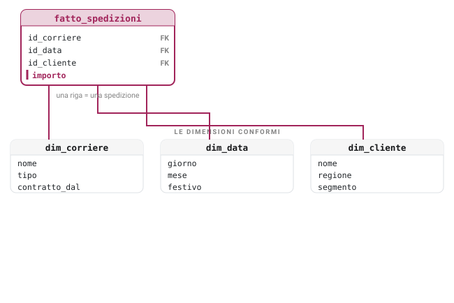
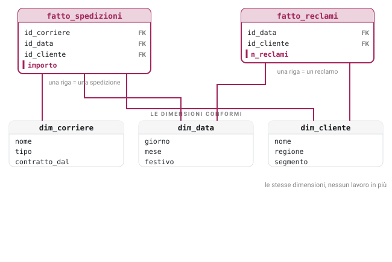
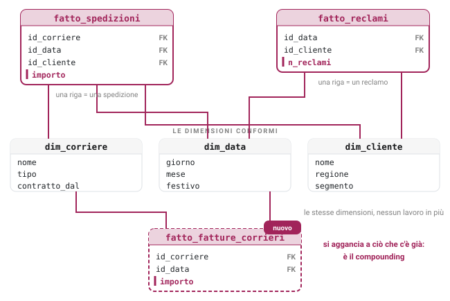
Misurato con la pagella: ricercabile dal generale al particolare (dal totale per corriere alla singola spedizione), non ridondante dove conta, e compounding per costruzione. È la ragione per cui l'agente entra qui e non nel transazionale.
23 / Sezione 3 · #slide-23
SEZIONE 3 · IL DATO STRUTTURATO, 2/2: DOVE SI INTERROGA
Limiti di Kimball, e cenni al data vault
Dove lo star non reggemolte fonti che cambiano (un nuovo gestionale, un'acquisizione): ogni cambiamento a monte costringe a rifare l'ETL e a volte il fatto. La storia: la dimensione storicizza gli attributi che qualcuno ha previsto, non tutto. L'integrazione: due sistemi che chiamano "cliente" cose diverse vanno riconciliati prima di arrivare alla stella, e lo star non ha un posto per quel lavoro.
Il data vaultun modello in tre tipi di tabella: hub (le chiavi di business: il cliente, il corriere), link (le relazioni fra chiavi: questa spedizione, questo corriere), satellite (gli attributi, con la loro storia completa, una tabella per fonte). Si aggiunge una fonte aggiungendo satelliti, senza toccare nulla. Tutto è storicizzato, sempre.
Il prezzonessuno lo legge direttamente: decine di tabelle strette, join ovunque. Il vault sta in mezzo, fra le fonti e le stelle: integra e conserva; poi da lì si costruiscono gli star schema per i lettori. Due forme, due lavori.
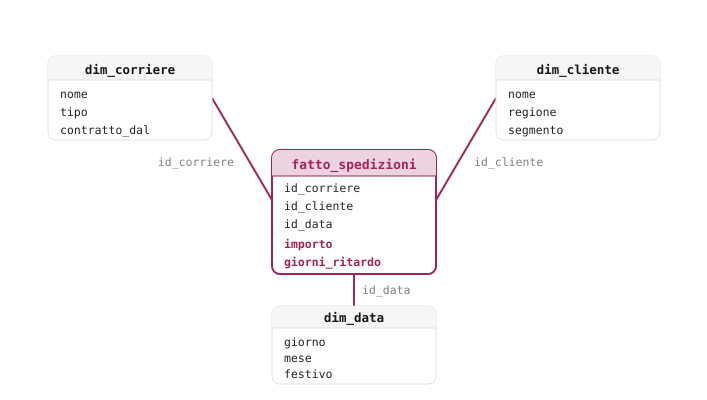
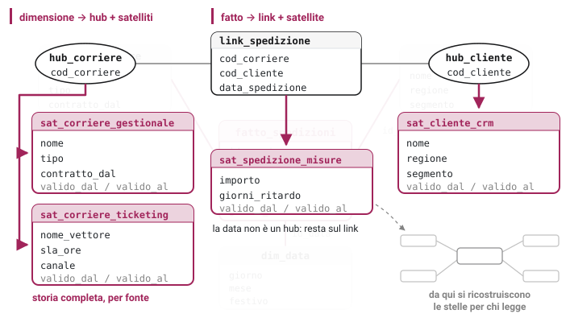
Notate la forma del vault: chiavi, relazioni fra chiavi, attributi. È un grafo scritto in tabelle, e non è un caso: quando la struttura deve evolvere nel tempo, il grafo torna. Sezione 5, e sezione 7 per le ontologie.
24 / Sezione 3 · #slide-24
SEZIONE 3 · DALL'INCONTRO 27
Lo spettro dei tool: da Databricks a DuckDB
Piattaforma (Databricks, Snowflake, BigQuery)
Database analitico (SQL Server, ClickHouse, Postgres con estensioni)
Motore in-process (DuckDB)
Dove gira
nel cloud, condivisa da tutta l'azienda
su un server tuo, o gestito
dentro un programma: un processo, un file
Per che cosa
il data warehouse aziendale, le pipeline, la governance
analisi su volumi medi, tempo reale
un export, un file Parquet, una sessione
Che cosa serve
un team, un contratto, un budget
un DBA
pip install, e niente altro
Lo stesso SQL
sì
sì
sì
Stesso linguaggio, tre scalela query della slide 10 gira su tutti e tre. Cambia chi la ospita, quanto costa, quanti dati regge; non cambia come si fa la domanda.
25 / Sezione 3 · #slide-25
SEZIONE 3 · DALL'INCONTRO 27
Il motore piccolo entra nel sandbox
Nel 27 era Pythonalla slide 20 il modello aveva scritto quattro righe di Python su ordini_08.json, il file che un tool gli aveva salvato nel sandbox.
Con DuckDB è SQLlo stesso file, la stessa domanda, scritta nella lingua del data warehouse. Senza il data warehouse: il motore sta dentro il processo che l'agente sta già usando.
[user]Quanti ordini di agosto sono in ritardo, e per quale corriere?
[assistant]→ esporta_ordini(mese="2026-08")
[tool]salvato in ordini_08.json (12.480 righe): cerca o elabora con bash
[assistant]→ bash("duckdb -c \"SELECT corriere, COUNT(*) AS n FROM 'ordini_08.json' WHERE consegna > prevista GROUP BY corriere ORDER BY n DESC\"")
[tool]SpedFast 121 · Corriere Nord 44 · PostaPro 22
25b / Sezione 3 · #slide-25b
SEZIONE 3 · IL DATO STRUTTURATO, 2/2: DOVE SI INTERROGA
La pagella dell'analitico
✓
ricercabile in modo progressivo
dal totale per corriere alla singola spedizione, scendendo lungo le dimensioni; lo schema si legge senza conoscerlo. Restano gli errori di granularità e di fanout: pochi, e sempre gli stessi.
~
non ridondante
ridondante di proposito nelle dimensioni, ma controllata: un fatto calcolato una volta, una regola sola. Diventa ✗ appena si cede all'antipattern della slide 22.
~
veritiera
più del transazionale, perché qui si pulisce e si storicizza; ma vale quanto la governance della slide 27: controlli, completezza, un proprietario. Senza, è un numero giusto su dati sbagliati.
✓
compounding
dimensioni conformi, metriche definite una volta: il terzo fatto si aggancia ai primi due. È il requisito in cui l'analitico batte tutto il resto.
Voti dati dal punto di vista di chi fa domande: una persona, o un agente.
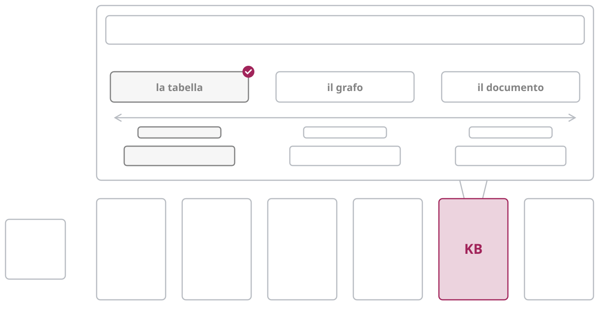
26 / Sezione 3 · #slide-26
SEZIONE 3 · IL DATO STRUTTURATO, 2/2: DOVE SI INTERROGA
Qualità, completezza, ownership, dipendenze
Qualitàil data warehouse pulisce (slide 13: gli errori vecchi del transazionale si sanano qui), ma pulisce ciò che sa: una data di consegna sbagliata di un giorno passa. Servono controlli scritti (il ritardo non può essere negativo; ogni spedizione ha un corriere) che girino a ogni carico, e qualcuno che guardi quando falliscono.
Completezzaciò che manca non si vede: i reclami arrivati per telefono non stanno nel ticketing, quindi non stanno nel fatto. Un numero giusto su un insieme incompleto è un numero sbagliato con l'aria di un numero giusto: la stessa faccia del fanout.
Ownershipogni tabella ha bisogno di un nome: chi risponde di fatto_spedizioni, chi decide che cosa vuol dire "ritardo", chi avvisa quando cambia. Senza, la definizione la dà chi l'ha usata per ultimo.
Dipendenzeil lineage della slide 21: se nessuno sa che il tool dell'agente legge fatto_spedizioni, la prima modifica alla pipeline lo rompe in silenzio. Le dipendenze vanno dichiarate, non scoperte.
ricercabile in modo progressivo
non ridondante
~
veritiera
è qui che si gioca
compounding
Questi quattro punti sono il mandato della Data Governance: chi risponde di che cosa, con quali regole, misurato come. Per l'agente sono i quattro modi in cui una risposta esce sbagliata da una query giusta. Trattare ogni tabella come un prodotto, con un proprietario e un contratto, è la sezione 7.
Il dato strutturato copre ciò che qualcuno ha deciso di mettere in una cella prima di scriverlo. Il contratto con SpedFast, il reclamo del cliente, la policy sui rimborsi non stanno in nessuna cella: sono testo. Come si cerca un fatto dentro un testo, e che cosa cambia per l'agente: sezione 4.
27 / Sezione 3 · #slide-27
SEZIONE 04
Il dato non strutturato: da analisi a search
Trovare è facile; decidere che cosa conta è il lavoro. E il testo resta senza relazioni esplicite.
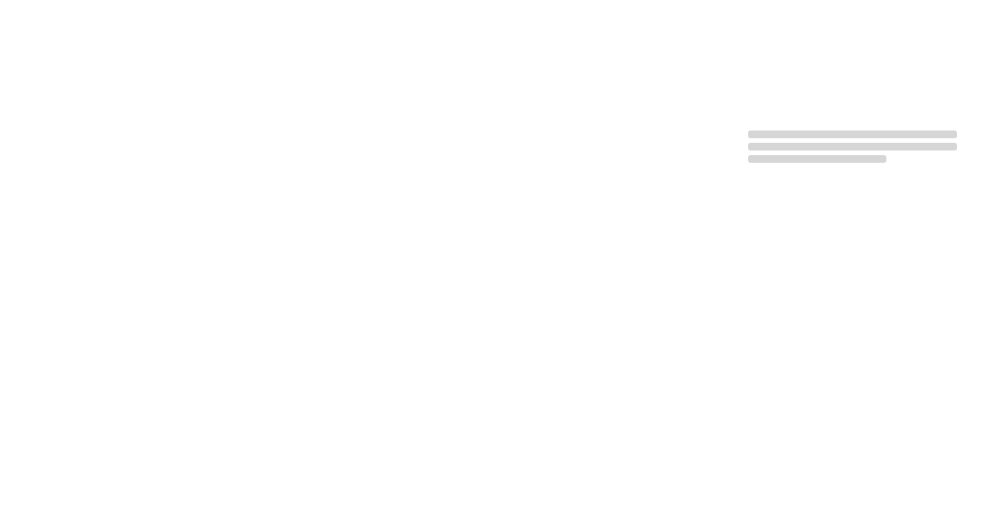
sei qui · il documento
SEZIONE 4 · IL DATO NON STRUTTURATO: DA ANALISI A SEARCH
Dove sta il non strutturato
Che cos'è, e dove stacontratti, procedure, offerte, verbali, presentazioni, mail, chat, pagine di wiki. In Word, PDF, PowerPoint; su SharePoint, Drive, Teams, e nelle caselle di posta di chi li ha scritti. Per volume e per valore è la parte più grande della conoscenza di un'azienda.
Che cosa non hauno schema deciso prima; un ETL che lo porti da qualche parte; un proprietario dichiarato; un ciclo di vita: nessuno sa se contratto_SpedFast_v3_FINALE.docx è quello in vigore, o se la policy rimborsi del 2024 è stata sostituita. Le versioni si moltiplicano per copia, mai per sostituzione.
Che cosa vuol dire per l'agenteè la conoscenza che gli serve di più (che cosa prevede il contratto? come si gestisce un reclamo?) ed è quella tenuta peggio. Il transazionale aveva le chiavi, il data warehouse aveva l'ETL e un responsabile; qui non c'è nulla fra il documento e chi lo legge.
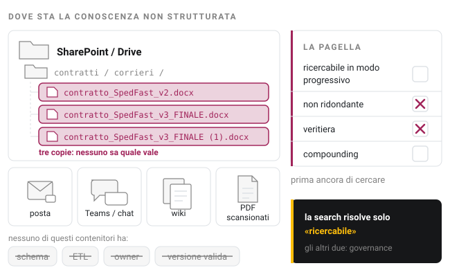
Prima di cercare, la pagella è già segnata: non ridondante ✗ (le copie), veritiera ✗ (nessuno sa quale versione vale). La search, che vediamo adesso, risolve "ricercabile"; gli altri due li risolve solo la governance dei documenti, e la sezione 7.
28 / Sezione 4 · #slide-28
SEZIONE 4 · IL DATO NON STRUTTURATO: DA ANALISI A SEARCH
Il fatto dentro il testo
Nel data warehousegiorni_ritardo = 5 è un fatto già deciso: qualcuno ha scelto la colonna, il tipo, la regola di calcolo, prima di scrivere. Chi legge non interpreta: trova.
Nel contratto"Per consegne effettuate oltre il terzo giorno lavorativo successivo alla data concordata, il Vettore riconoscerà una penale pari al 2% del valore della spedizione." Il fatto (penale 2%, soglia 3 giorni lavorativi) c'è, ma sta in una frase: chi legge deve trovarla, capirla, e decidere che "giorno lavorativo" è la stessa cosa del "giorno di ritardo" del data warehouse. Forse no.
Informazione spuriaogni estrazione è un'interpretazione, e può essere sbagliata: la frase giusta letta male, la frase di un contratto vecchio, una bozza mai firmata. Il data warehouse sbaglia in pochi modi noti (la granularità); il testo sbaglia in modi che non si vedono.
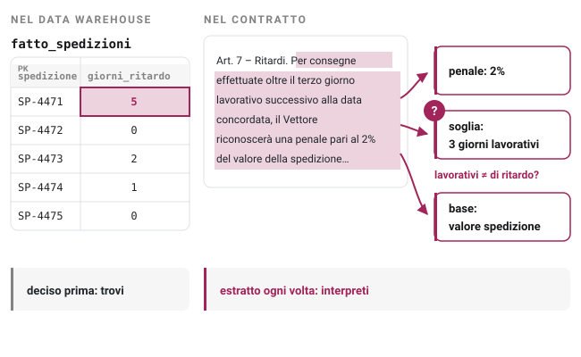
È la piramide della slide 3 al contrario: il testo è informazione con dentro i fatti, e il lavoro è tirarli fuori. Il data management del non strutturato è questo: da documento a fatto, ogni volta, o una volta per tutte (sezione 7).
29 / Sezione 4 · #slide-29
SEZIONE 4 · IL DATO NON STRUTTURATO: DA ANALISI A SEARCH
Da problema di analisi a problema di search
Analisi
Search
L'unità
la riga di un fatto, con la sua granularità
il passaggio: un paragrafo, una clausola, una pagina
La domanda
quanto, per chi, quando: si calcola
dove sta scritto: si trova, poi si legge
Lo strumento
una query su tabelle con uno schema
un indice su testi senza schema, e un punteggio
La risposta
un numero, esatto o sbagliato
una lista ordinata di candidati, e nessuna garanzia che il primo sia quello giusto
I documenti di Acmei contratti con i corrieri (SpedFast, Corriere Nord, PostaPro), le policy sui rimborsi e sui resi, i reclami dei clienti, le procedure del servizio clienti. Qualche migliaio di pagine.
La domanda tipo"che cosa prevede il contratto con SpedFast per i ritardi?" Nessuna tabella la contiene. Un indice deve restituire il passaggio giusto fra migliaia, e in cima.
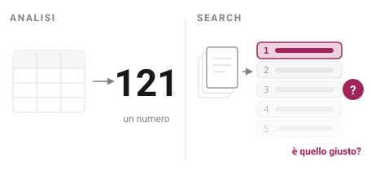
Il numero si controlla ricalcolandolo; il passaggio si controlla leggendolo. È per questo che nella search il problema non è trovare qualcosa, ma trovare quello giusto e metterlo per primo: slide 34.
30 / Sezione 4 · #slide-30
SEZIONE 4 · IL DATO NON STRUTTURATO: DA ANALISI A SEARCH
Cercare per parole: BM25
Tre ingredientiquante volte il passaggio contiene la parola (frequenza del termine); in quanti passaggi dell'archivio quella parola compare (più è rara, più pesa: "penale" vale, "il" no); quanto è lungo il passaggio (un termine in dieci righe vale più dello stesso in cento). BM25 è la formula che li combina, ed è lo standard da trent'anni.
Efficace ed efficientenomi, codici, sigle, numeri: "SpedFast", "art. 7", "4471": se la parola c'è, la trova, e la trova in cima. Nessun modello, nessun addestramento, nessuna GPU: un indice invertito, parola → passaggi, che si costruisce in minuti su milioni di documenti e risponde in millisecondi. È il motore dentro Elasticsearch, e per una parte enorme delle ricerche reali basta da solo.
I limiti, e i rimedicerca lettere, non significato: "ritardo" non trova "consegna oltre i termini". Ma molto si sistema senza un modello: elenchi di sinonimi ("penale, indennizzo, risarcimento"), riduzione delle parole alla radice (ritardo, ritardi, ritardata), espansione con i termini del dominio. Resta cieco alle parafrasi che nessuno ha previsto: è lì che serve il significato, prossima slide.
[query]penale ritardo SpedFast
1.contratto SpedFast, art. 7 "…il Vettore riconoscerà una penale pari al 2%…" SpedFast ×2 · penale ×1 · ritardo ×0 → alto
2.mail del 3 settembre "…la spedizione SpedFast è di nuovo in ritardo…" SpedFast ×1 · ritardo ×1 → medio
3.contratto Corriere Nord "…indennizzo per consegna oltre i termini…" 0 parole in comune → non trovato
con il sinonimo "indennizzo" nell'elenco → trovato
31 / Sezione 4 · #slide-31
SEZIONE 4 · DALL'INCONTRO 26
Dal token al chunk: l'embedding di un passaggio
Nel 26a ogni token il suo vettore, in uno spazio a migliaia di dimensioni; la vicinanza è affinità, il prodotto scalare la misura. Era il primo strato dell'LLM.
Che cosa cambiaqui serve un vettore per un pezzo di testo: una frase, un paragrafo, una clausola. Quel pezzo si chiama chunk, ed è l'unità della search da qui in avanti. Il suo vettore non è la media dei token: è l'uscita di un modello (un piccolo transformer, lo stesso della sezione 3 del 26) addestrato a un compito diverso: mettere vicini un chunk e la domanda a cui risponde, lontani i chunk che non c'entrano. Milioni di coppie domanda–risposta, e il modello impara che "penale per ritardo" e "indennizzo oltre i termini" devono stare vicini.
La ricercala domanda diventa un vettore con lo stesso modello; il punteggio di ogni chunk è il prodotto scalare fra i due (la slide 13 del 26); vince il più alto. Contro milioni di chunk, con un indice fatto apposta, in millisecondi.
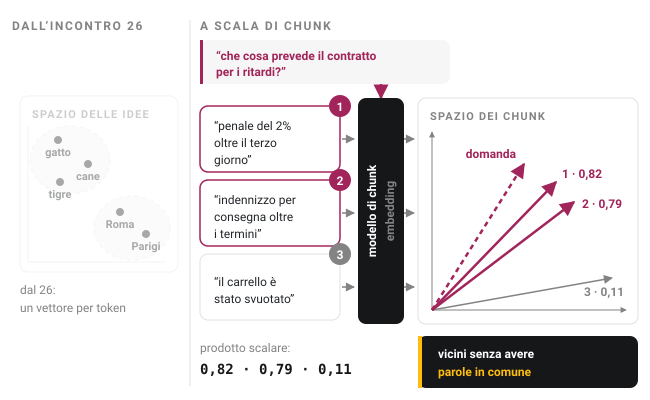
L'LLM del 26 usa i vettori per generare; questo modello li usa per confrontare. Sono parenti (stessa architettura, stesso spazio delle idee), non la stessa cosa: un modello di embedding non scrive, e un LLM non è un buon motore di ricerca.
32 / Sezione 4 · #slide-32
SEZIONE 4 · IL DATO NON STRUTTURATO: DA ANALISI A SEARCH
Cercare per significato: l'indice vettoriale
Il chunkingogni documento va spezzato in chunk di qualche centinaio di token, con una sovrapposizione fra l'uno e l'altro perché una frase tagliata a metà non perda senso. Troppo piccoli: il chunk non dice da che contratto viene. Troppo grandi: il vettore diventa una media di tutto e non somiglia a nulla. È la prima decisione, e la più sottovalutata.
L'indiceun vettore per chunk, milioni di vettori; la ricerca del più vicino esatta costerebbe un prodotto scalare per ciascuno, l'indice la approssima (ANN) e risponde in millisecondi. Lo offrono i database vettoriali dedicati, ma anche Postgres, Elasticsearch, DuckDB.
Dove è cieco"4471", "art. 7", "SpedFast": per il modello sono stringhe senza significato, e due codici diversi hanno vettori quasi uguali. Il cliente che chiede dell'ordine 4471 riceve il chunk dell'ordine 4417. È esattamente ciò che BM25 faceva bene.
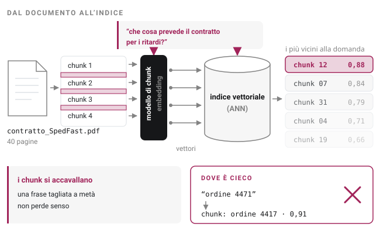
Chunking e modello di embedding sono scelte di progetto, non impostazioni: cambiare l'uno o l'altro vuol dire rifare l'indice. Sono la KB della leva "Knowledge Base" del 27 (slide 40), letteralmente.
33 / Sezione 4 · #slide-33
SEZIONE 4 · IL DATO NON STRUTTURATO: DA ANALISI A SEARCH
Trovare è facile, ordinare è difficile
Hybrid: i due modi insiemeBM25 trova i nomi e i codici, l'indice vettoriale trova le parafrasi. Si lanciano entrambi, si fondono le due liste, e si tengono i primi cento. Retrieval largo e a basso costo: qui dentro la risposta c'è quasi sempre.
Ma quale dei cento?il primo per somiglianza è spesso una bozza mai firmata, un contratto scaduto, la mail che cita la clausola invece della clausola. La somiglianza dice "parla della stessa cosa", non "è la fonte giusta".
I segnali oltre la somiglianzala data (un contratto del 2026 batte uno del 2023); la fonte (la cartella dei contratti firmati batte la posta); e l'autorità: un documento che molti altri citano, linkano, allegano vale di più. È PageRank: i link sono voti, e chi riceve voti da chi ha voti pesa di più. Sul web ha fatto Google; in azienda vale sul grafo di chi cita chi.
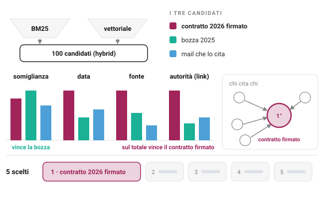
La rilevanza è una somma pesata di segnali, e i pesi si imparano guardando che cosa gli utenti aprono davvero. È il retrieval come tool a sua volta AI del 27 (slide 48): si valuta a parte, con documenti attesi, non a sensazione.
34 / Sezione 4 · #slide-34
SEZIONE 4 · IL DATO NON STRUTTURATO: DA ANALISI A SEARCH
Reranking: il secondo passaggio
Perché un secondo passaggiol'indice vettoriale confronta due vettori calcolati separatamente, la domanda senza sapere del chunk e il chunk senza sapere della domanda. È ciò che lo rende veloce su milioni, ed è ciò che lo rende approssimativo. Su cento candidati ci si può permettere di più.
Il cross-encoderdomanda e chunk entrano insieme nello stesso transformer, e l'attention (il 26) li legge l'uno alla luce dell'altro: esce un solo numero, quanto quel chunk risponde a quella domanda. Cento chiamate, non milioni: costa, ma si può.
ColBERT: la via di mezzoun vettore per ogni token del chunk, calcolati prima e messi nell'indice; al momento della domanda ogni suo token cerca il token più simile nel chunk, e i punteggi si sommano (interazione tardiva). Quasi l'accuratezza del cross-encoder, quasi la velocità dell'indice: "4471" torna a contare come parola, perché ha il suo vettore.
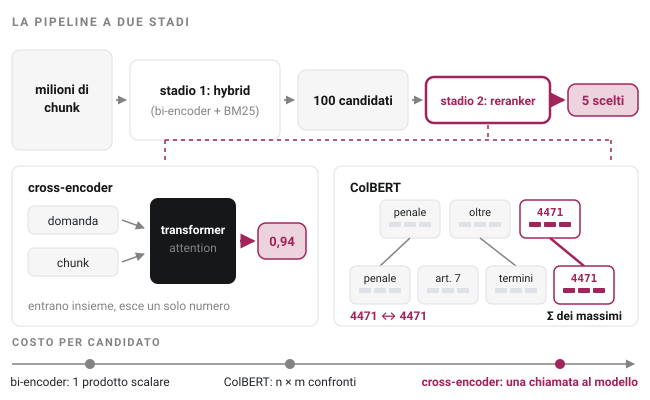
La regola dei due stadi vale ovunque nella search: economico e largo per non perdere nulla, caro e stretto per scegliere bene. Nella sezione 6 il secondo stadio, a volte, è l'LLM stesso.
35 / Sezione 4 · #slide-35
SEZIONE 4 · IL DATO NON STRUTTURATO: DA ANALISI A SEARCH
La pagella del non strutturato, e la cerniera
~
ricercabile in modo progressivo
si trova il chunk, in cima se il ranking è buono; ma non si scende dal generale al particolare: non c'è un "totale per corriere" da cui partire, e per sapere se il chunk è la risposta bisogna leggerlo. Ricercabile, non interrogabile.
✗
non ridondante
le copie della slide 28: tre versioni del contratto, tutte nell'indice, tutte con lo stesso vettore. La search le trova tutte e tre; quale valga lo deve decidere qualcun altro.
✗
veritiera
l'indice non sa se un documento è in vigore, firmato, sostituito. Un chunk di una bozza pesa quanto uno del contratto. Senza un ciclo di vita gestito (sezione 7), la search è precisa su fonti di cui non si sa nulla.
✗
compounding
un documento nuovo non rende più utili i vecchi: si aggiunge all'indice, e basta. Il contratto e il reclamo che parlano della stessa spedizione non si agganciano: la relazione esiste nel mondo, non nell'archivio.
Voti dati dal punto di vista di chi fa domande: una persona, o un agente.
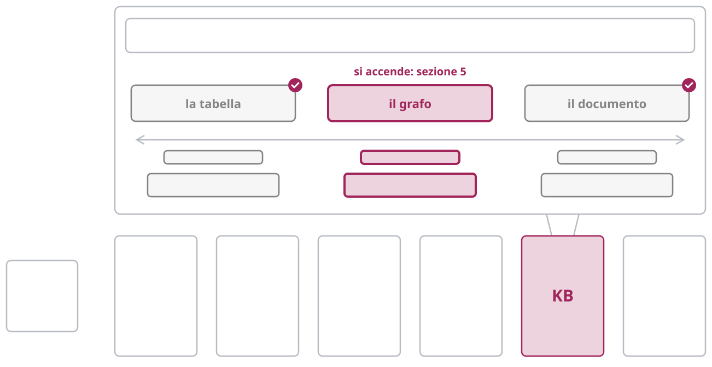
Il contratto vincola SpedFast; la spedizione 4471 è di SpedFast; il reclamo di Rossi riguarda la 4471. Tre fatti, in tre posti, che nessun indice collega: le relazioni esistono, ma nessuno le ha scritte. Scriverle, una per una, e percorrerle: sezione 5.
36 / Sezione 4 · #slide-36
SEZIONE 05
In mezzo allo spettro: i grafi
Le relazioni scritte una per una si percorrono come una tabella e si aggiungono come un documento. Ma ogni forma serve le sue domande.
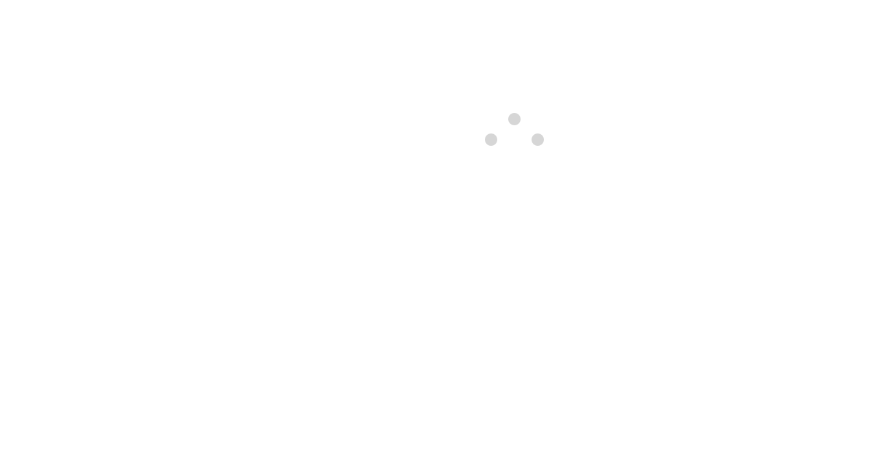
sei qui · il grafo
SEZIONE 5 · IN MEZZO ALLO SPETTRO: I GRAFI
Le relazioni, scritte una per una
Da Eulero a Berners-Leenel 1736 Eulero risolve il problema dei ponti di Königsberg riducendo la città a punti e linee: nasce la teoria dei grafi. Nel 1989 Berners-Lee propone al CERN "una rete di note con collegamenti, molto più utile di un sistema gerarchico fisso": cerchi e frecce, nodi e link, il web. In mezzo, due secoli e mezzo di matematica su nodi e archi.
Nodi e archiun nodo è una cosa: Rossi, l'ordine 4471, SpedFast, il contratto. Un arco è una relazione fra due nodi, con una direzione e un nome: Rossi –ordina→ 4471; 4471 –spedito da→ SpedFast; contratto –vincola→ SpedFast. Niente altro.
I tre fatti, collegatinella sezione 4 stavano in tre posti e nessun indice li univa. Qui sono cinque nodi e quattro archi, e la domanda "il reclamo di Rossi riguarda un corriere con penale?" è un percorso: da Rossi, lungo gli archi, fino al contratto. Chi legge segue le frecce; non deve sapere nulla dello schema.
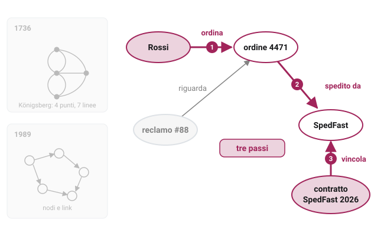
È il grafo delle cose, non dei tipi di cose: Rossi e 4471, non "Cliente" e "Ordine". L'altro grafo, l'ontologia della slide 3, torna nella sezione 7.
37 / Sezione 5 · #slide-37
SEZIONE 5 · IN MEZZO ALLO SPETTRO: I GRAFI
Il property graph
I nodiogni nodo ha una o più etichette, che dicono che tipo di cosa è (Cliente, Ordine, Corriere), e delle proprietà chiave-valore (nome: "Rossi", importo: 184.30). Il motore non impone uno schema: due nodi Cliente possono avere proprietà diverse. Ma è meglio che non lo facciano: la stessa etichetta, le stesse proprietà, altrimenti chi percorre il grafo, persona o modello, non sa che cosa aspettarsi. La libertà serve per aggiungere un tipo nuovo, non per tenere in disordine quelli che ci sono.
Gli archiogni arco ha una direzione, un tipo (ORDINA, SPEDITO_DA, VINCOLA) e, se serve, proprietà sue: su SPEDITO_DA stanno data_prevista e data_consegna, perché appartengono alla relazione fra quell'ordine e quel corriere, non a uno dei due.
L'altra forma: le tripleil web semantico scrive lo stesso grafo come triple soggetto–predicato–oggetto (4471 spedito_da SpedFast), con nomi globali (URI) e senza proprietà sugli archi. Stessa idea, più rigida e più interoperabile: è la forma delle ontologie, sezione 7.
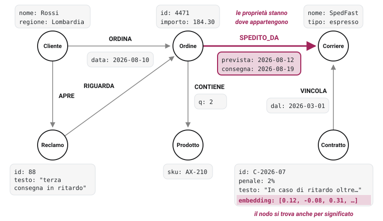
Nel data warehouse il ritardo era una colonna del fatto; qui è una proprietà dell'arco SPEDITO_DA, o si calcola dalle sue date. Il fatto di Kimball e l'arco del grafo sono la stessa cosa vista da due modelli: una relazione fra dimensioni, con delle misure sopra.
38 / Sezione 5 · #slide-38
SEZIONE 5 · IN MEZZO ALLO SPETTRO: I GRAFI
Cypher: un mini focus
La domanda"i clienti che hanno fatto un reclamo su un ordine spedito da un corriere il cui contratto prevede una penale". Quattro relazioni in fila: cliente → reclamo → ordine → corriere → contratto.
In SQLquattro join, ognuna con la sua coppia di chiavi, e bisogna sapere quali. Il percorso c'è, ma è nascosto nelle condizioni ON.
In Cyphersi disegna il percorso: le parentesi tonde sono nodi, le frecce archi, i nomi fra parentesi quadre i tipi. Si legge come si pensa; e il pattern è lo schema.
-- SQL: quattro joinSELECT DISTINCT c.nome
FROM clienti c
JOIN reclami r ON r.id_cliente = c.id_cliente
JOIN ordini o ON o.id_ordine = r.id_ordine
JOIN spedizioni s ON s.id_ordine = o.id_ordine
JOIN contratti t ON t.corriere = s.corriere
WHERE t.penale > 0;
-[:RIGUARDA]-> un arco, con il suo tipo e la direzione
<-[:VINCOLA]- la freccia al contrario: dal contratto al corriere
WHERE · RETURN il filtro e la risposta, come in SQL
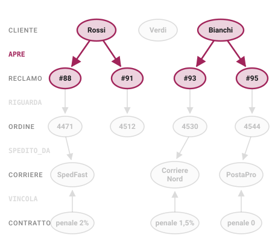
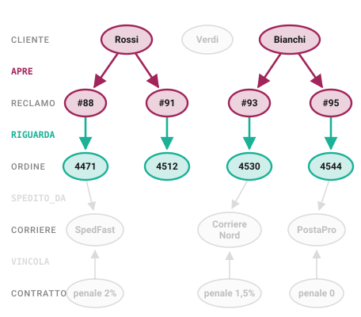
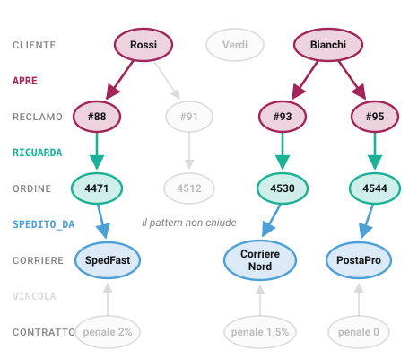
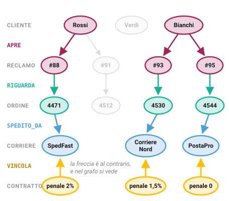
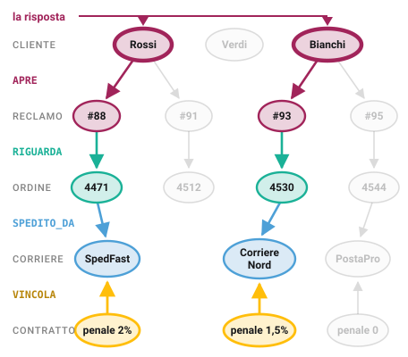
Per un modello, il secondo è più facile da scrivere giusto: il pattern è la domanda, e gli errori di join (la chiave sbagliata, il fanout) non hanno dove nascondersi. Torna nella sezione 6.
39 / Sezione 5 · #slide-39
SEZIONE 5 · IN MEZZO ALLO SPETTRO: I GRAFI
Perché non un database relazionale
Rappresentare è faciledue tabelle, nodi (id, etichetta, proprietà) e archi (da, a, tipo, proprietà), tengono qualsiasi grafo. Il modello non è il problema.
Percorrere è il problemaogni passo lungo un arco è una join fra archi e nodi; un percorso di quattro passi è quattro join; "tutti i nodi raggiungibili da Rossi" non ha un numero di passi noto prima, e vuole una query ricorsiva. Il costo di una join dipende dalla dimensione delle tabelle: con milioni di archi, ogni passo rilegge milioni di righe.
Nel grafo un passo costa ugualeun motore a grafo tiene, per ogni nodo, i puntatori ai suoi archi (adiacenza senza indice): andare da Rossi ai suoi ordini costa quanto i suoi ordini, non quanto tutti gli ordini. Il percorso più breve, i vicini a tre passi, le comunità: domande che nel relazionale sono ore, qui sono millisecondi.
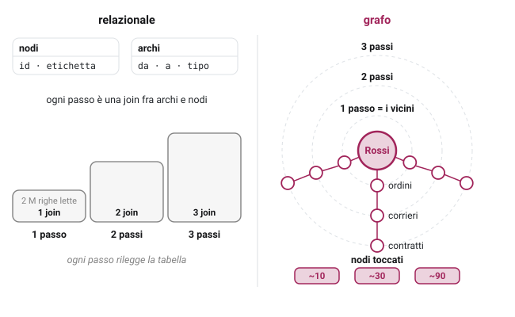
La regola pratica: se le domande hanno una profondità fissa e piccola (una o due join), il relazionale basta. Se la profondità è variabile o alta, o la domanda è "come sono collegati questi due?", serve un grafo.
40 / Sezione 5 · #slide-40
SEZIONE 5 · IN MEZZO ALLO SPETTRO: I GRAFI
Il grafo è un modello, non un motore
La struttura si evolvearrivano le fatture dei corrieri: un'etichetta nuova, Fattura, e un arco nuovo, FATTURA→Spedizione. Nessuna tabella da alterare, nessun ETL da rifare, nessun fatto da ridisegnare: i nodi vecchi non se ne accorgono. È la libertà del documento, sulla struttura invece che sul contenuto.
Ma la navigazione resta rigorosaun arco c'è o non c'è; un percorso esiste o non esiste; il risultato di un pattern è lo stesso oggi e domani. Niente punteggi, niente "forse": è il determinismo della tabella, sulle relazioni.
Motori diversi, stesso modelloNeo4j e simili, nati per questo (Cypher, adiacenza senza indice). Ma anche due tabelle nodi e archi in Postgres o DuckDB con query ricorsive, quando i percorsi sono corti. E il data vault della slide 24: hub, link, satelliti sono un grafo scritto in tabelle. Il modello è la decisione; il motore è una conseguenza del volume e della profondità.
Il grafo non è la forma migliore: è la forma giusta per le domande di relazione e di percorso. Le somme per corriere restano più semplici e più veloci nello star schema; una clausola di contratto resta un documento, e un sistema documentale ben organizzato la serve meglio di qualsiasi nodo. Ogni punto dello spettro ha i suoi casi d'uso: il lavoro è mettere ciascun dato nella forma delle domande che riceve, e collegare le forme fra loro (sezione 7).
41 / Sezione 5 · #slide-41
SEZIONE 5 · IN MEZZO ALLO SPETTRO: I GRAFI
La pagella dei grafi, e la cerniera
✓
ricercabile in modo progressivo
si parte da un nodo e si scende lungo gli archi, un passo alla volta: da Rossi ai suoi ordini, da un ordine al suo corriere. È la ricerca progressiva per costruzione, sulle relazioni invece che sulle dimensioni. Non sostituisce le somme (star) né la ricerca nel testo (search).
✓
non ridondante
ogni cosa è un nodo, una volta: SpedFast è un nodo solo, e tutte le spedizioni, i contratti, i reclami lo puntano. La ridondanza del documento (SpedFast scritto in mille chunk) qui sparisce.
~
veritiera
un arco è vero se chi l'ha scritto aveva ragione. Se gli archi vengono da un ETL dal transazionale, valgono quanto il transazionale; se li ha estratti un modello da un testo (sezione 6 e 7), valgono quanto l'estrazione. Il grafo non ha un modo proprio di sapere che un arco è sbagliato.
✓
compounding
il requisito in cui il grafo batte tutto: un nodo o un arco nuovo si aggancia a ciò che c'è e rende raggiungibile ciò che prima non lo era. Il contratto aggiunto oggi rende rispondibile la domanda sul reclamo di ieri.
Voti dati dal punto di vista di chi fa domande: una persona, o un agente.
Tabelle da interrogare, documenti da cercare, grafi da percorrere: tre forme, ognuna per le sue domande. Ora la domanda la fa un agente: come entra in ciascuna forma, e dove sbaglia. Sezione 6.
42 / Sezione 5 · #slide-42
SEZIONE 06
Pattern agentici di accesso al dato
L'agente non aggiunge conoscenza: aggiunge un lettore che sbaglia con sicurezza dove la conoscenza è tenuta male.
sei qui · i pattern
SEZIONE 6 · DALL'INCONTRO 27
Tre pattern, un lettore
Tre pattern, tre toolText2SQL per le tabelle (il modello scrive la query, il tool la esegue); search per i documenti (il tool cerca, il modello legge i chunk); traversal per i grafi (il modello scrive il pattern, il tool lo percorre; nello spettro la colonna si chiama GraphRAG, che è questo traversal fatto su un grafo estratto dal testo: slide 50–51). Sono tool nel senso del 27: nome, descrizione, parametri, e un risultato che rientra come testo.
Chi sceglie il patternil modello, dalla domanda e dalle descrizioni dei tool (il 27, slide 11): "quanti" va alle tabelle, "che cosa prevede" ai documenti, "come sono collegati" al grafo. Se le descrizioni sono vaghe, sceglie il pattern sbagliato, e il risultato sembra giusto lo stesso.
Che cosa non cambiala conoscenza è quella delle sezioni 2–5, con la sua pagella. L'agente non la migliora: la legge. Un tool su un data warehouse ben fatto risponde bene; lo stesso tool su dieci pipeline per report risponde con tre verità.
Ripresa del 27 (slide 18): un tool non è un'API. Un tool Text2SQL non espone il database: espone "esegui questa query"; l'identità, il salvataggio del risultato grande, i limiti stanno nell'adattatore. Vale per tutti e tre i pattern.
43 / Sezione 6 · #slide-43
SEZIONE 6 · DALL'INCONTRO 27
Text2SQL: com'è fatto
Lo schema entra al giro zeronel system prompt, sotto le regole, c'è la descrizione del data warehouse: il DDL di fatto_spedizioni e delle dimensioni (slide 16), con una riga di descrizione per tabella e per colonna, e la granularità dichiarata: "una riga è una spedizione". È il 27, slide 8: ciò che il modello deve sapere, l'harness glielo mette davanti prima della prima parola.
Il modello scrive il SQLlegge la domanda, legge lo schema, e chiama esegui_sql con la query della slide 10. Non c'è un secondo modello dentro il tool: il tool esegue, e basta.
L'harness esegue, con l'identità giustala query gira sul data warehouse come Marco (slide 20); se fallisce, l'errore rientra come testo (il 27, slide 16) e il modello la riscrive; se riesce, rientrano tre righe: SpedFast 121 · Corriere Nord 44 · PostaPro 22. Il conto l'ha fatto il database.
Nel 27 il modello aveva scritto Python su un file; nella slide 25b SQL su un file con DuckDB; qui SQL sul data warehouse, attraverso un tool. Tre volte la stessa domanda: cambia dove sta il dato e chi fa il conto. Che cosa mettere nel system prompt perché il SQL esca giusto è la prossima slide.
44 / Sezione 6 · #slide-44
SEZIONE 6 · PATTERN AGENTICI DI ACCESSO AL DATO
Text2SQL: i requisiti informativi
Lo schema, con le descrizionitabelle e colonne, e per ciascuna una riga in italiano: giorni_ritardo: giorni di calendario fra consegna e data prevista, 0 se in anticipo. I nomi da soli non bastano, e i nomi tecnici sono peggio di niente.
La granularità"una riga di fatto_spedizioni è una spedizione". Una frase, e il fanout della slide 19 perde metà delle occasioni.
Le join notequali tabelle si uniscono, su quali chiavi: la stella lo dice da sola; un transazionale a duecento tabelle no.
Le metriche, definite"ordini in ritardo = spedizioni con giorni_ritardo > 0"; "ritardo medio = media di giorni_ritardo sulle sole spedizioni in ritardo". Senza, ogni domanda inventa la sua regola: le tre verità della slide 14, generate dal modello.
I valori di esempiocorriere contiene SpedFast, Corriere Nord, PostaPro, non SPEDFAST S.R.L.; regione è il nome, non la sigla. È il modo più economico per evitare un WHERE che non trova nulla.
Le query di esempiodieci domande frequenti con il SQL giusto: il modello copia la forma, e la forma è quasi tutto.
Uno star schema con i nomi di business dà 1, 2 e 3 quasi gratis; 4, 5 e 6 li deve scrivere qualcuno. Sono la stessa cosa che serve a un collega nuovo, messa per iscritto una volta: nella sezione 7 si chiama semantic linking (slide 56): l'ontologia collegata alle tabelle, da cui descrizioni, granularità, join e metriche escono senza scriverle a mano.
45 / Sezione 6 · #slide-45
SEZIONE 6 · PATTERN AGENTICI DI ACCESSO AL DATO
Text2SQL: dove sbaglia
La tabella o la colonna sbagliatail modo più frequente: fra spedizioni, fatto_spedizioni e spedizioni_v2 sceglie quella con il nome più simile alla domanda, o inventa una colonna che sembra dovesse esserci (data_ritardo). Rimedio: descrizioni, e meno tabelle esposte.
La join sbagliata, e il fanoutla slide 19, scritta dal modello: unisce due fatti prima di aggregare e l'importo esce nove volte più grande. Nessun errore, un numero. Rimedio: la granularità dichiarata, le join note, e un tool che sappia dire di no.
L'ambiguità della domanda"ordini in ritardo": rispetto alla data prevista o a quella promessa al cliente? Festivi inclusi? Il modello sceglie, e non dice di aver scelto. Rimedio: le metriche definite; e un modello che, se la definizione manca, chiede invece di scegliere.
Il risultato grande"dammi le spedizioni in ritardo" restituisce 187 righe; "tutte le spedizioni" 12.480. Iniettarle in finestra è il carico della slide 18 del 27. Rimedio: l'adattatore salva su file e restituisce le prime righe e il conteggio; il modello cerca nel file se serve.
[assistant]→ esegui_sql("SELECT … FROM spedizioni_v2 …")✗ tabella sbagliata
[tool]187 righe (sembra giusto)
[assistant]→ esegui_sql("… FROM fatto_spedizioni s JOIN fatto_reclami r …")✗ fanout
[tool]SpedFast 1.658.700 € (sembra giusto)
[assistant]→ esegui_sql("… WHERE giorni_ritardo > 0")✗ ritardo secondo chi?
[tool]187 (sembra giusto)
[assistant]→ esegui_sql("SELECT * FROM fatto_spedizioni")✗ 12.480 righe
[tool]salvato in risultato.csv (12.480 righe): prime 5 righe … · usa grep o duckdb
La differenza fra un buon Text2SQL e uno cattivo non è il modello: è quanto di questi quattro errori la KB rende impossibili prima ancora che la query venga scritta. Il semantic linking trasforma i primi tre da "numero sbagliato" a "errore esplicito": sezione 7, slide 56.
46 / Sezione 6 · #slide-46
SEZIONE 6 · DALL'INCONTRO 27
Naive RAG: un colpo solo
Il colpola domanda del cliente, così com'è, va all'indice della sezione 4 (hybrid, magari con reranking); tornano i primi cinque chunk; l'harness li appende alla finestra come tool_result; il modello scrive la risposta citando i chunk. Retrieve once, generate once: nessuna decisione del modello, nessun secondo tentativo.
Due stadi, due misureil 27 (slide 48): il retrieval ha trovato i chunk giusti, e in cima? La sintesi li ha usati bene, senza aggiungere? Si misurano separatamente perché si correggono in posti diversi: il primo nella KB (chunking, indice, ranking), il secondo nel prompt.
Il peso in finestracinque chunk da cinquecento token sono 2.500 token per domanda, a ogni domanda, per tutta la sessione. È il context rot del 26 (slide 44–45) con l'acceleratore: la RAG è il tool che riempie la finestra più in fretta di tutti, e i chunk vecchi sono i primi da potare (il 27, slide 35).
Per una parte grande dei casi basta: una domanda, una clausola, una risposta. Fallisce quando la domanda non è la query giusta, quando la risposta sta in due documenti, o quando non sta in nessun chunk: le prossime tre slide.
47 / Sezione 6 · #slide-47
SEZIONE 6 · PATTERN AGENTICI DI ACCESSO AL DATO
Il modo agentico: iterare, e incrociare le fonti
Da un colpo solo a iterativo
la query fallisce o torna vuota: l'errore rientra come testo (il 27, slide 16) e il modello la riscrive. Il chunk taglia la clausola: apre il documento intero e ci cerca dentro con grep. La domanda è ambigua: chiede, invece di scegliere. Ogni giro del 3° loop corregge uno degli errori delle slide 46 e 47.
Da una fonte sola a più fonti
"che cosa spetta a Rossi per il ritardo?" non sta in nessuna fonte: i giorni nel data warehouse, la penale nel contratto, il buono nella policy, il legame ordine–corriere nel grafo. Il modello chiama tre tool nello stesso turno e compone; nessuno dei tre, da solo, avrebbe risposto.
tre fonti, un turno
[user]Il cliente Rossi chiede cosa gli spetta per il ritardo dell'ordine 4471.
[tool]policy_rimborsi_2026.md: "…il cliente ha diritto a un buono del 10%…"
[assistant]Ordine 4471, 7 giorni di ritardo (5 lavorativi), SpedFast: al cliente un buono del 10% (policy 2026); ad Acme una penale del 2% da SpedFast (art. 7).
[tool]84: Art. 7 – Ritardi. …oltre il terzo giorno lavorativo… una penale pari al 2% del valore…
[assistant]→ bash("grep -n -i 'lavorativ' contratti/SpedFast_2026.txt | head -3")
[tool]12: "giorno lavorativo": dal lunedì al venerdì, festivi esclusi.
[assistant]→ esegui_sql("SELECT COUNT(*) n, SUM(importo)*0.02 penale_stimata FROM fatto_spedizioni JOIN dim_corriere USING (id_corriere) WHERE nome='SpedFast' AND giorni_lavorativi_ritardo > 3 AND id_data BETWEEN 20260801 AND 20260831")
[tool]n: 97 · penale_stimata: 1.230,00
[assistant]Art. 7: penale del 2% oltre il terzo giorno lavorativo (lun–ven, festivi esclusi). Ad agosto 97 spedizioni oltre la soglia: penale stimata 1.230 €. Contratto 2026, non 2023.
5 tool call · 2 fonti · nessun indice · ~800 token · la definizione di "ritardo" l'ha letta nel contratto
Il prezzo, e la regolapiù giri, più latenza, più token in finestra; e un modello che cerca male cerca male tre volte. Il primo colpo deve essere buono (slide 45, sezione 4); il loop serve per ciò che il primo colpo non chiude. Non un altro indice: lo stesso, con il loop davanti.
A volte basta grepuna ricerca agentica con bash (glob per elencare, grep per cercare) a volte batte indici vettoriali complessi: chi costruisce Claude Code li ha provati sul codice e li ha tolti. Vale dove le parole sono esatte e l'archivio è ordinato; altrove serve l'indice, ma il loop davanti serve lo stesso.
48 / Sezione 6 · #slide-48
SEZIONE 6 · PATTERN AGENTICI DI ACCESSO AL DATO
Il limite: sintetizzare oltre il chunk
La domanda che non ha un chunk"di che cosa si lamentano di più i clienti, e con quali corrieri?" Quattromila reclami. Nessun reclamo contiene la risposta: la risposta è una distribuzione sui quattromila. L'indice restituisce i cinque più simili alla domanda, cioè cinque reclami qualsiasi.
Perché il loop non bastail modello può cercare "ritardo", poi "danneggiato", poi "mancante", e contare. Ma non sa che cosa cercare prima di aver letto tutto, e leggere tutto non sta in finestra (il 26: il contesto è finito, e degrada prima). Iterare aiuta a trovare; non aiuta a vedere l'insieme.
Che cosa servirebbeuna struttura costruita prima, una volta, che abbia già letto tutto e tenuto il riassunto: le entità di cui si parla, come si legano, e un sommario per ogni gruppo. Cioè un grafo estratto dal testo, con i suoi riassunti. È GraphRAG, prossime due slide.
Se i reclami fossero nel data warehouse, con una colonna motivo, la domanda sarebbe un GROUP BY (slide 10). Il problema è che il motivo sta nel testo: GraphRAG è, in fondo, il modo di costruire quella colonna a partire dal testo, una volta per tutte.
49 / Sezione 6 · #slide-49
SEZIONE 6 · PATTERN AGENTICI DI ACCESSO AL DATO
GraphRAG: il lexical graph
Il lexical graphogni documento è un nodo; ogni chunk è un nodo, collegato al documento (PART_OF) e al chunk successivo (NEXT). È il chunking della sezione 4 scritto come grafo: si sa da dove viene un chunk e che cosa c'è prima e dopo. Solo con questo, il "chunk che taglia la clausola a metà" si risolve seguendo NEXT.
Le entità estratteun modello legge ogni chunk e scrive le cose di cui parla e come si legano: SpedFast –ha_penale→ 2%; reclamo #88 –riguarda→ ritardo. Ogni entità è un nodo collegato ai chunk in cui compare (HAS_ENTITY). È l'estrazione della slide 29, fatta una volta per tutte e scritta come archi.
Come si cercala search vettoriale trova il chunk d'ingresso; da lì si percorre: le entità del chunk, gli altri chunk delle stesse entità, i vicini a un passo. "Quali reclami citano SpedFast e un ritardo?" diventa un pattern (sezione 5) su un grafo che prima non esisteva.
[user]Quali reclami citano SpedFast per un ritardo, e cosa prevede il contratto?
[assistant]Tre reclami citano SpedFast per ritardi (#88, #903, #77); il contratto 2026, art. 7, prevede una penale del 2%.
Il termine è di Neo4j, e il grafo è quello delle cose (sezione 5): SpedFast, #88, non Corriere. Chi decide quali tipi di entità estrarre e con quali nomi sta già scrivendo un'ontologia, anche se non lo sa: sezione 7.
50 / Sezione 6 · #slide-50
SEZIONE 6 · PATTERN AGENTICI DI ACCESSO AL DATO
GraphRAG: community detection
Le comunitànel grafo delle entità, i nodi che si citano molto fra loro formano gruppi: SpedFast · ritardo · penale · Lombardia da una parte, PostaPro · pacco danneggiato · reso dall'altra. Un algoritmo (Leiden) li trova da solo, a più livelli: comunità piccole dentro comunità grandi. Nessuno le ha disegnate.
I riassuntiper ogni comunità, a ogni livello, un modello scrive un rapporto: chi c'è, di che cosa si parla, quanti chunk. Migliaia di chiamate al modello, una volta, all'indicizzazione: è il costo di GraphRAG, e non è piccolo (ore, milioni di token).
La domanda globale"di che cosa si lamentano di più i clienti?" va a tutti i rapporti del livello scelto: ognuno produce una risposta parziale (map), poi una chiamata le fonde (reduce). La risposta è una sintesi su tutto l'archivio, e in finestra sono entrati riassunti, non quattromila reclami.
Microsoft, 2024: su domande di sintesi GraphRAG batte la naive RAG per completezza e varietà, giudicate da un modello; su domande puntuali la naive RAG resta più diretta, e non ha pagato un'indicizzazione di ore e milioni di token. Non è un'alternativa alla search: è la struttura per la classe di domande che la search non può vedere.
51 / Sezione 6 · #slide-51
SEZIONE 6 · PATTERN AGENTICI DI ACCESSO AL DATO
La pagella dei pattern, e la cerniera
✓
ricercabile in modo progressivo
è il requisito che i pattern migliorano davvero: il SQL scende dal totale al dettaglio, la search agentica riformula e apre, il grafo percorre. A patto che la forma sotto lo permetta: sullo schema normalizzato della slide 11 nessun pattern salva il modello.
~
non ridondante ereditato: ~ · ✗ · ✓
Text2SQL su dieci pipeline per report sceglie una delle dieci; la search su tre versioni del contratto ne cita una; GraphRAG estrae tre nodi SpedFast se il testo lo scrive in tre modi. Il pattern non toglie copie: le trova tutte.
~
veritiera ereditato, con un'aggravante: ~ · ✗ · ~
il modello risponde con la stessa sicurezza su un dato buono e su uno cattivo, e la slide 46 lo mostra: l'errore è un numero plausibile. Il pattern non aggiunge verità; toglie l'esitazione che una persona avrebbe avuto.
~
compounding
il lexical graph e le comunità sono conoscenza nuova estratta dal testo, e si accumula. Ma senza nomi condivisi (SpedFast del data warehouse e SpedFast del grafo sono la stessa cosa?) ogni pattern accumula per sé.
Voti dati dal punto di vista di chi fa domande: una persona, o un agente. Fra parentesi i voti delle tre forme sotto: tabella · documento · grafo.
Tre pattern, e a tutti manca la stessa cosa: che cosa vuol dire "ritardo", che cosa è un "corriere", che SpedFast della tabella e SpedFast del contratto sono uno. Il significato, scritto una volta, letto da persone, pipeline e agenti. Sezione 7.
52 / Sezione 6 · #slide-52
SEZIONE 07
Superare i limiti, e il know-how
Il significato, scritto una volta sopra le forme che ci sono, è ciò che rende la conoscenza utile a persone, pipeline e agenti.
sei qui · l'ontologia
SEZIONE 7 · SUPERARE I LIMITI, E IL KNOW-HOW
Il gradino della semantica
Le definizionila definizione di "ritardo" sta nel codice di dieci pipeline, nella testa di chi le ha scritte, in una clausola di contratto; e cambia da dipartimento a dipartimento, se non da persona a persona: per la logistica sono giorni lavorativi dalla data prevista, per il servizio clienti giorni di calendario dalla data promessa, per l'amministrazione quelli che attivano la penale. Dieci definizioni, nessuna dichiarata. Il modello ne sceglie una, e non dice di aver scelto (slide 46).
Le identitàSpedFast in dim_corriere, "SpedFast S.r.l." nel contratto, tre nodi SpedFast nel grafo estratto: la stessa cosa, senza un nome che lo dica. Ogni forma accumula per sé (slide 52).
Le relazioni fra i tipiche un corriere è vincolato da un contratto, che una spedizione ha un ritardo, che un ritardo attiva una penale: lo sa chi legge, non lo sa nessun sistema. È il grafo dei tipi della slide 3, che finora non abbiamo scritto.
Chi ne risponde: data as a product un proprietario, un contratto, dei controlli per ogni tabella, indice, grafo. Slide 54.
Che cosa vuol dire: l'ontologia classi, proprietà, relazioni, definizioni, scritte una volta e lette da persone, pipeline e agenti. Slide 55–58.
È la piramide della slide 3, al gradino che mancava: contesto lo abbiamo messo (le tabelle, gli indici), azioni le abbiamo viste (i pattern). La semantica è ciò che trasforma informazione in conoscenza, e non la produce nessun motore: la scrive qualcuno.
53 / Sezione 7 · #slide-53
SEZIONE 7 · SUPERARE I LIMITI, E IL KNOW-HOW
Managing data as a product
Un prodotto, non una pipelinefatto_spedizioni non è l'uscita di un ETL: è un prodotto che il team logistica pubblica per chi lo legge, con un nome, una versione, un proprietario che risponde alle domande e agli incidenti. Chi lo usa è un cliente, non un collega che passa di lì.
Il contrattolo schema con le descrizioni, la granularità, le metriche definite, la frequenza di aggiornamento, i controlli di qualità che girano a ogni carico e che cosa succede se falliscono. Scritto, versionato, e rotto solo con preavviso: le dipendenze della slide 21 diventano un accordo, non una scoperta.
Vale per tutte le formeun indice di documenti è un prodotto (quali documenti, quale versione vale, chi li cura); un grafo è un prodotto (quali entità, estratte come, con quale affidabilità). I quattro punti della slide 27, qualità, completezza, ownership, dipendenze, hanno ciascuno una riga nel contratto.
Per l'agente: la descrizione di esegui_sql, e lo schema nel system prompt, sono il contratto del prodotto dati, letto da un modello. Un prodotto senza contratto è un tool senza descrizione: viene usato male, o a caso. È anche il principio del data mesh: i prodotti li pubblica chi conosce il dominio, e la piattaforma dà a tutti lo stesso modo di pubblicarli.
54 / Sezione 7 · #slide-54
SEZIONE 7 · SUPERARE I LIMITI, E IL KNOW-HOW
Semantic modeling: l'ontologia
Che cos'èun elenco di classi (Cliente, Ordine, Spedizione, Corriere, Contratto, Penale), le loro proprietà, le relazioni fra classi (Spedizione –consegnata da→ Corriere; Contratto –vincola→ Corriere), e per ciascuna una definizione in italiano e i sinonimi ("corriere, vettore, trasportatore"). È il grafo della slide 3, scritto per davvero.
Che cosa non ènon contiene Rossi né 4471: quelli stanno nel grafo delle istanze (sezione 5), nelle tabelle, nei documenti. L'ontologia è lo schema del significato: come il DDL dice la forma di una tabella, l'ontologia dice che cosa vuol dire, e come si collega al resto.
Da dove si cominciada un'ontologia piccola ma completa, non da un glossario piatto: le classi, le loro proprietà (Spedizione: data prevista, data consegna, importo), le relazioni fra classi, una definizione e un responsabile per ciascuna. È la relazione che permette di rispondere, e la proprietà che permette di mappare una colonna.
Un'ontologia cross, e le ontologie di dominioi concetti validi per tutta l'organizzazione (Cliente, Ordine, Prodotto, Fornitore) stanno in un'ontologia principale, cross; ogni dipartimento ha la sua ontologia di dominio (la logistica: Spedizione, Corriere, Ritardo, Penale; l'amministrazione: Fattura, Nota di credito) che estende la principale e le si collega: Corriere è un Fornitore, Penale riduce una Fattura. Le definizioni locali restano locali; le identità sono condivise.
L'ontologia è compounding per definizione: ogni classe nuova si aggancia alle esistenti, e ogni fonte nuova (una tabella, un archivio, un grafo) si mappa sulle classi che ci sono invece di inventare le proprie. Ed è ciò che l'agente legge per capire che dim_corriere.nome, "il Vettore" del contratto e il nodo SpedFast sono la stessa cosa.
55 / Sezione 7 · #slide-55
SEZIONE 7 · SUPERARE I LIMITI, E IL KNOW-HOW
Nel dato strutturato: il semantic linking
Che cos'èun collegamento esplicito, mantenuto, fra gli elementi dell'ontologia e gli elementi fisici: la classe Spedizione → la tabella fatto_spedizioni (una riga = un'istanza: la granularità, dichiarata dalla classe); la proprietà data consegna → la colonna data_consegna; la relazione Spedizione –consegnata da→ Corriere → la join fatto_spedizioni.id_corriere = dim_corriere.id_corriere. Ogni colonna sa di quale proprietà è la forma fisica, e ne eredita definizione, sinonimi, owner.
Che cosa ne escele descrizioni dello schema non le scrive nessuno a mano: vengono dall'ontologia, una volta, per tutte le tabelle che mappano la stessa classe. Le join note sono le relazioni. La definizione di "ritardo" è una sola, quella della classe, e chi calcola la colonna la deve rispettare. E dim_corriere.id_corriere = 17 e il nodo SpedFast sono la stessa istanza della stessa classe: l'identità è condivisa per costruzione.
Come lo usa l'agentenel system prompt entra lo schema annotato dal linking: i requisiti 1, 2, 3 e 4 della slide 45 prodotti dall'ontologia, non da un analista di buona volontà. Il modello scrive SQL su tabelle che sanno che cosa vogliono dire; e quando la domanda usa un concetto che non è mappato, la risposta giusta è "non ho una tabella per questo", non un numero plausibile.
DEMOl'ontologia di Quantyca e il suo linking alle tabelle. Se c'è tempo.
I semantic layer dei vendor (le semantic view di Snowflake, le metric view di Databricks, il Semantic Layer di dbt, tutti esposti agli agenti via MCP) fanno una parte di questo lavoro, quella delle metriche. Il linking è più largo: parte dall'ontologia, non dalla metrica, e copre anche ciò che non si somma.
56 / Sezione 7 · #slide-56
SEZIONE 7 · SUPERARE I LIMITI, E IL KNOW-HOW
Nel dato non strutturato: l'ontologia guida l'estrazione
Il prompt di estrazione è l'ontologianella slide 50 il modello estraeva "le cose di cui parla il chunk", a modo suo: tre nodi SpedFast, un ritardo che non si sa se è la classe o l'istanza. Con l'ontologia nel prompt estrae solo classi note (Corriere, Penale, Clausola), con le relazioni note, e ogni entità la risolve a un'identità: "il Vettore" del contratto → Corriere #17, lo stesso di dim_corriere. Il grafo estratto dal testo e la stella parlano degli stessi oggetti. Ed è un lavoro in cui agenti dedicati sono molto bravi: data un'ontologia, trovano nel testo libero le entità e le relazioni con precisione alta, pagina dopo pagina, e segnalano ciò che non sanno mappare.
I metadati del documentol'ontologia ha anche la classe Documento, con le sue proprietà: tipo (contratto, policy, reclamo), data di validità, versione, proprietario, stato (bozza, firmato, sostituito), e le relazioni (Contratto –vincola→ Corriere, Policy –sostituisce→ Policy). Compilarle è il ciclo di vita che mancava: contratto_SpedFast_v3_FINALE.docx diventa Contratto C-2026-07, firmato, valido dal 2026-03-01, sostituisce C-2023-02.
Che cosa cambia per la searchi filtri della slide 34 (data, fonte, autorità) diventano proprietà dichiarate, non indovinate dal nome del file; una bozza non entra nell'indice, o entra marcata; e il retrieval può partire dal grafo ("i documenti che vincolano SpedFast") invece che dalla somiglianza.
È la piramide al contrario, chiusa: dal testo si estraggono fatti (slide 29), ma con i tipi e le identità decisi prima. L'estrazione resta un'interpretazione, e può sbagliare: per questo il grafo estratto è un prodotto (slide 54), con un owner e un'affidabilità dichiarata.
57 / Sezione 7 · #slide-57
SEZIONE 7 · SUPERARE I LIMITI, E IL KNOW-HOW
L'approccio convergente
Una sola ontologia, tre formeCorriere è una classe; dim_corriere ne è la forma tabellare, il nodo Corriere #17 quella a grafo, "il Vettore" evidenziato nel contratto quella testuale. Stessa definizione, stesso owner, stessa identità. Nessuna forma sostituisce le altre: la stella somma, il grafo percorre, il documento conserva la clausola intera.
Le domande attraversano le forme"quanto ci costano i ritardi di SpedFast, contratto alla mano?": la metrica dalla stella, la penale dalla clausola, il legame dal grafo. L'agente della slide 48 lo faceva a fatica, indovinando che erano la stessa cosa; qui lo sa, perché l'ontologia lo dice. Il modo agentico funziona su una KB convergente; su una KB a silos funziona per fortuna.
Che cosa non convergei motori, che restano diversi; la governance, che resta per prodotto; e il lavoro, che resta di persone: scrivere e mantenere l'ontologia, fare il linking, decidere le identità. Gli agenti aiutano nell'estrazione e nel controllo; non decidono che cosa vuol dire "ritardo".
✓
ricercabile in modo progressivo
dalla classe alla forma giusta
✓
non ridondante
un'identità per cosa
✓
veritiera
un owner per definizione, un contratto per prodotto
✓
compounding
ogni fonte nuova si mappa su classi che esistono
Voti dal punto di vista di chi fa domande: una persona, o un agente.
"Superare i limiti del data management" non è un altro strumento: è scrivere il significato una volta, sopra gli strumenti che ci sono. È la conoscenza della piramide, ed è ciò che il blocco KB della formula contiene davvero.
58 / Sezione 7 · #slide-58
SEZIONE 7 · DALL'INCONTRO 27
Know-how: le skill
Il termine che mancavala formula ha due termini per la conoscenza: KB, ciò che l'organizzazione sa, e Skills, ciò che sa fare. Oggi abbiamo aperto il primo. Il secondo l'abbiamo visto nel 27: un documento di istruzioni, la procedura che un esperto scriverebbe a un collega nuovo, caricato a richiesta.
Il know-how usa il know-whatrimborsi-acme chiamava cerca_ordine e crea_rimborso; una skill di oggi chiamerebbe esegui_sql sul data warehouse mappato, cerca_documenti sui contratti con i metadati, percorri_grafo. La procedura è buona quanto ciò che trova dall'altra parte: una skill perfetta su una KB a silos produce risposte perfette e sbagliate.
Chi la scrivechi il lavoro lo sa fare, nella lingua in cui lo spiegherebbe a una persona. È il punto in cui l'organizzazione mette il proprio modo di lavorare a disposizione dell'agente, e il posto in cui l'ontologia torna: i nomi che la skill usa sono quelli delle classi.
---
name: rimborsi-acme
description: Procedura per gestire una richiesta
di rimborso: verifica, soglie, quando passare
a un operatore.
---
frontmatterdal 27, slide 26
## Procedura
1. Verifica con cerca_ordine che l'ordine esista
e sia consegnato.
2. Se l'importo è sotto 50 €, apri il rimborso
con crea_rimborso.
3. Se è sopra, o se l'ordine è contestato, apri
un ticket con crea_ticket e rispondi al cliente
che un operatore lo contatterà.
4. Non promettere mai tempi di accredito.
corpocaricato a richiesta
DEMOuna skill vera, dal repo Quantyca: frontmatter, corpo, i tool che chiama. Se c'è tempo.
Nel 27: "la KB dice come stanno le cose, la skill dice come si fa; nella formula sono due termini diversi, e nel 28 vedremo perché". Il perché: si scrivono in posti diversi, da persone diverse, e si leggono in momenti diversi. Ma si chiamano a vicenda.
![La trasformazione di forma, da sinistra a destra: le fonti come database transazionale, molte tabelle normalizzate legate da join, con la colonna data_prevista di spedizioni evidenziata; il blocco ETL che ricompone, calcola, integra, storicizza; il data warehouse disegnato come stella, fatto_spedizioni al centro con tre dimensioni e l'owner; i consumatori disegnati: il report dei ritardi, la dashboard della direzione, l'agente con il tool esegui_sql. Un'onda parte dalla colonna evidenziata e arriva a tutti e tre: se cambia questa, si rompono questi](svg/slide21-lineage.svg)
![Un'ontologia a due livelli: in alto l'ontologia cross con Cliente, Ordine, Prodotto, Fornitore; sotto i domini logistica, con Spedizione, Corriere, Ritardo, Penale, Contratto e le loro relazioni, e amministrazione, con Fattura e Nota di credito; archi tratteggiati fra i livelli: Corriere è un Fornitore, Spedizione di Ordine, Penale riduce Fattura; accanto a Corriere e Ritardo la definizione e i sinonimi con l'owner; sotto, dalla classe Corriere tre frecce verso dim_corriere, il nodo Corriere 17 e il Vettore nel contratto](svg/slide55-ontologia.svg)
![A sinistra una pagina del contratto con le entità evidenziate nel testo, un colore per classe: il Vettore è Corriere 17, la penale del 2% è Penale, il terzo giorno lavorativo è la soglia, la data concordata è la data prevista, Acme è il cliente del contratto, franco magazzino non è mappato; accanto la legenda delle classi; al centro l'agente di estrazione con l'ontologia in ingresso; a destra il grafo estratto: il contratto C-2026-07 con la sua scheda di ciclo di vita, vincola il Corriere 17, la clausola art. 7 prevede la penale oltre la soglia; una linea tratteggiata dal Corriere 17 a dim_corriere id 17: la stessa identità della tabella](svg/slide57-estrazione-guidata.svg)